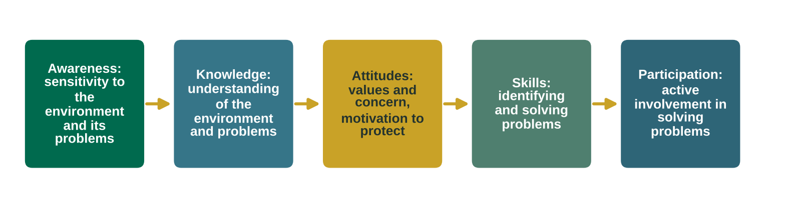
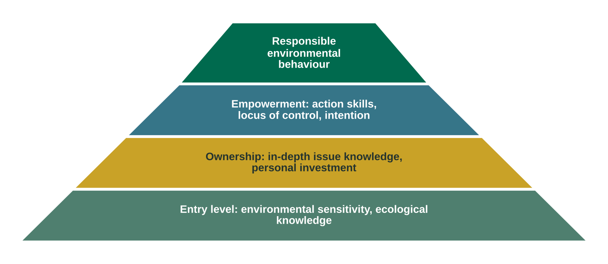
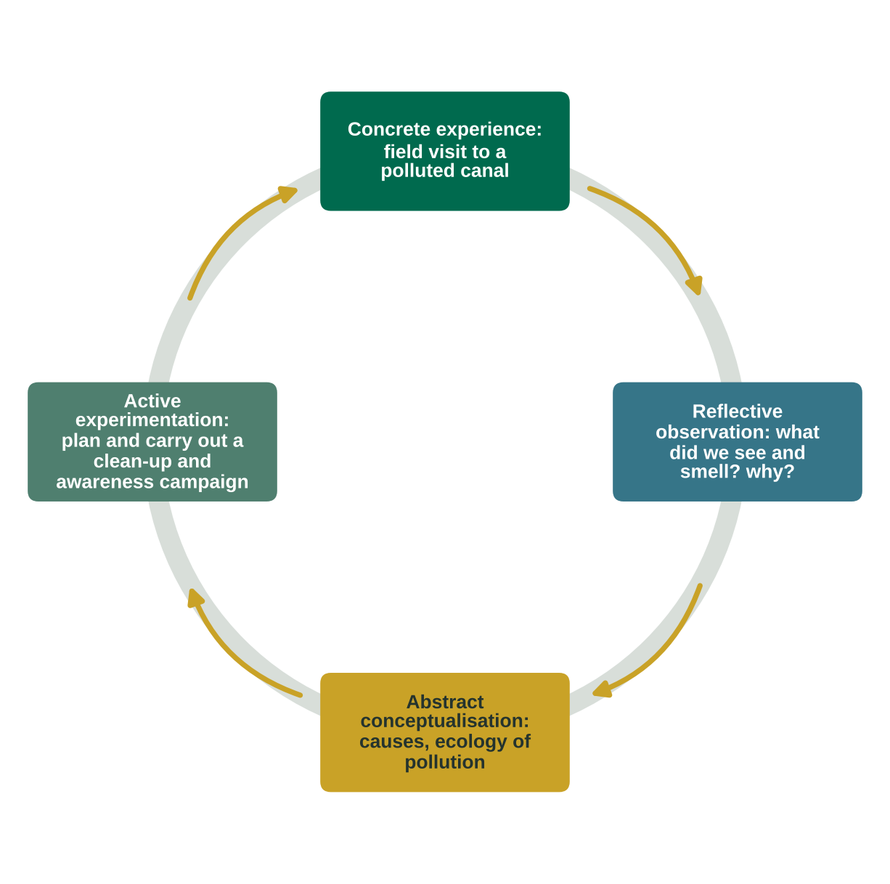
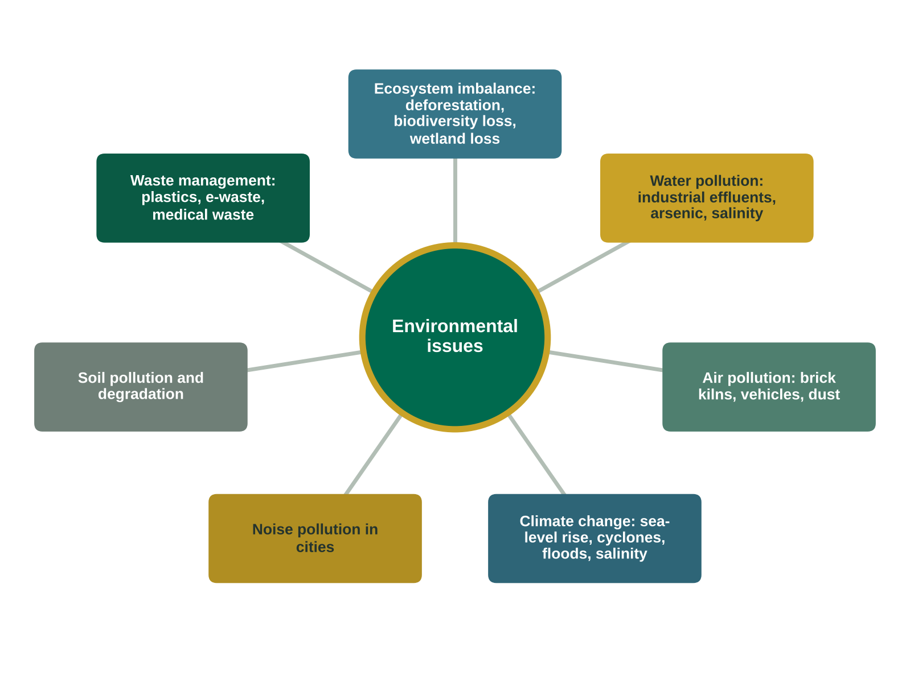
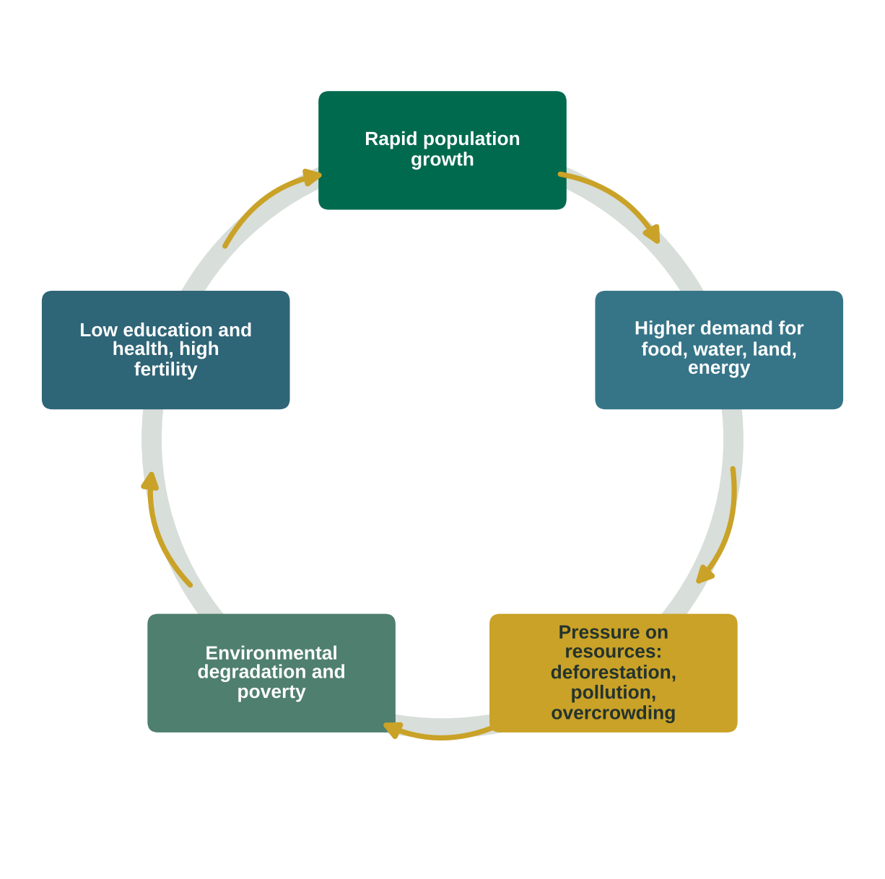

<!DOCTYPE html>

<html lang="bn">
<head>
<meta charset="utf-8"/>
<meta content="width=device-width, initial-scale=1" name="viewport"/>
<title>PC 123 পরিবেশ শিক্ষা · শিক্ষার্থীদের পাঠ নোট</title>
<meta content="পরিবেশ সাক্ষরতা, পরিবেশ শিক্ষার শিক্ষাক্রম ও শিক্ষণপদ্ধতি, বাংলাদেশের পরিবেশগত সমস্যা, জনসংখ্যা, স্বাস্থ্য ও দুর্যোগ ঝুঁকি হ্রাস শিক্ষা" name="description"/>
<link href="assets/favicon.svg" rel="icon" type="image/svg+xml"/>
<link href="https://fonts.googleapis.com" rel="preconnect"/>
<link crossorigin="" href="https://fonts.gstatic.com" rel="preconnect"/>
<link href="https://fonts.googleapis.com/css2?family=Fraunces:opsz,wght@9..144,400;9..144,500;9..144,600&amp;family=Inter:wght@400;500;600;700&amp;family=Noto+Serif+Bengali:wght@400;600&amp;family=Source+Serif+4:ital,opsz,wght@0,8..60,400;0,8..60,600;1,8..60,400&amp;display=swap" rel="stylesheet"/>
<link href="assets/style.css" rel="stylesheet"/>
<script>try{var t=localStorage.getItem('theme');if(t)document.documentElement.dataset.theme=t}catch(e){}</script>
<link href="https://fonts.googleapis.com/css2?family=Noto+Sans+Bengali:wght@400;500;600;700&amp;family=Noto+Serif+Bengali:wght@400;500;600;700&amp;display=swap" rel="stylesheet"/></head>
<body><a class="skip-link" href="#main">মূল লেখায় চলে যান</a><header class="top">
<button aria-expanded="false" aria-label="কোর্স মেনু খুলুন" class="menu-btn" id="menuBtn">
<svg aria-hidden="true" height="22" viewbox="0 0 24 24" width="22"><path d="M3 6h18M3 12h18M3 18h18" stroke="currentColor" stroke-linecap="round" stroke-width="2"></path></svg>
</button>
<a class="brand" href="bn-index.html"><span aria-hidden="true" class="brand-mark"><svg height="30" viewbox="0 0 32 32" width="30"><circle cx="16" cy="16" fill="none" r="15" stroke="currentColor" stroke-width="1.2"></circle><path d="M8 12.5 16 9l8 3.5-8 3.5z" fill="currentColor"></path><path d="M11 14.2v4.3c0 1.6 2.2 2.9 5 2.9s5-1.3 5-2.9v-4.3" fill="none" stroke="currentColor" stroke-width="1.3"></path></svg></span><span class="brand-text">Education <em>Study Notes</em></span></a>
<div class="search" role="search">
<input aria-label="সব নোটে খুঁজুন" autocomplete="off" id="q" placeholder="সব নোটে খুঁজুন" type="search"/>
<div class="results" hidden="" id="results"></div>
</div>
<a aria-label="Read this page in English" class="lang-switch" href="pc123.html" hreflang="en" lang="en">English</a><button aria-label="লাইট বা ডার্ক মোড বদলান" class="theme-btn" id="themeBtn">
<svg aria-hidden="true" height="20" viewbox="0 0 24 24" width="20"><path d="M21 12.8A9 9 0 1 1 11.2 3a7 7 0 0 0 9.8 9.8z" fill="currentColor"></path></svg>
</button>
</header>
<div class="layout">
<nav aria-label="কোর্সসমূহ" class="side" id="side"><a class="side-home" href="bn-index.html">প্রথম পাতা</a> <a class="side-home" href="bn-practice.html">MCQ অনুশীলন</a><div class="side-group"><div class="side-glabel">বি.এড (অনার্স) মূল কোর্সসমূহ</div><ul>
<li><a href="bn-pc111.html"><span class="code">PC 111</span> শিক্ষা পরিচিতি</a></li>
<li><a href="bn-pc112.html"><span class="code">PC 112</span> বাংলাদেশের শিক্ষা</a></li>
<li><a href="bn-pc113.html"><span class="code">PC 113</span> শিক্ষা মনোবিজ্ঞান</a></li>
<li><a href="bn-pc114.html"><span class="code">PC 114</span> শিক্ষণ প্রযুক্তি</a></li>
<li><a href="bn-pc115.html"><span class="code">PC 115</span> শিক্ষার দার্শনিক ভিত্তি</a></li>
<li><a href="bn-pc116.html"><span class="code">PC 116</span> শিক্ষার সমাজতাত্ত্বিক ভিত্তি</a></li>
<li><a href="bn-pc117.html"><span class="code">PC 117</span> শিক্ষায় মূল্যায়ন পরিচিতি</a></li>
<li><a href="bn-pc118.html"><span class="code">PC 118</span> শিক্ষাপ্রতিষ্ঠানের সংগঠন ও ব্যবস্থাপনা</a></li>
<li><a href="bn-pc119.html"><span class="code">PC 119</span> শিক্ষা ও উন্নয়ন</a></li>
<li><a href="bn-pc120.html"><span class="code">PC 120</span> শিক্ষাক্রম পরিচিতি</a></li>
<li><a href="bn-pc121.html"><span class="code">PC 121</span> মূল্যবোধ শিক্ষা</a></li>
<li><a href="bn-pc122.html"><span class="code">PC 122</span> জেন্ডার শিক্ষা</a></li>
<li class="current"><a href="bn-pc123.html"><span class="code">PC 123</span> পরিবেশ শিক্ষা</a><ul class="side-toc">
<li><a data-toc="unit-1-concepts-of-environmental-education" href="#unit-1-concepts-of-environmental-education">ইউনিট ১: পরিবেশ শিক্ষার ধারণা</a></li>
<li><a data-toc="unit-2-environmental-education-curriculum-and-implementation" href="#unit-2-environmental-education-curriculum-and-implementation">ইউনিট ২: পরিবেশ শিক্ষার শিক্ষাক্রম ও বাস্তবায়ন</a></li>
<li><a data-toc="unit-3-environmental-education-in-the-context-of-bangladesh" href="#unit-3-environmental-education-in-the-context-of-bangladesh">ইউনিট ৩: বাংলাদেশের প্রেক্ষাপটে পরিবেশ শিক্ষা</a></li>
<li><a data-toc="unit-4-health-education-population-education-and-disaster-risk-reduction" href="#unit-4-health-education-population-education-and-disaster-risk-reduction">ইউনিট ৪: স্বাস্থ্য শিক্ষা, জনসংখ্যা শিক্ষা ও দুর্যোগ ঝুঁকি হ্রাস</a></li>
<li><a data-toc="reading-list" href="#reading-list">পাঠতালিকা</a></li>
<li><a data-toc="exam-preparation-bank" href="#exam-preparation-bank">পরীক্ষা প্রস্তুতি প্রশ্নব্যাংক</a></li>
<li><a data-toc="references" href="#references">তথ্যসূত্র</a></li>
</ul>
</li>
<li><a href="bn-pc124.html"><span class="code">PC 124</span> উপানুষ্ঠানিক ও জীবনব্যাপী শিক্ষা</a></li>
<li><a href="bn-pc125.html"><span class="code">PC 125</span> শিক্ষা গবেষণা পরিচিতি</a></li>
<li><a href="pc126.html"><span class="code">PC 126</span> শিক্ষায় পরিসংখ্যান</a></li>
<li><a href="pc127.html"><span class="code">PC 127</span> শিক্ষায় একীভূতকরণ</a></li>
</ul></div>
<div class="side-group"><div class="side-glabel">এম.এড কোর্সসমূহ</div><ul>
<li><a href="ed501.html"><span class="code">ED 501</span> বৈশ্বিক প্রেক্ষাপটে শিক্ষা</a></li>
<li><a href="ed502.html"><span class="code">ED 502</span> শিক্ষায় নীতি, কৌশল ও নেতৃত্ব</a></li>
<li><a href="ed503.html"><span class="code">ED 503</span> শিক্ষায় তথ্য ও যোগাযোগ প্রযুক্তি</a></li>
<li><a href="ed504.html"><span class="code">ED 504</span> শিক্ষা গবেষণার পদ্ধতি ও কৌশল</a></li>
<li><a href="eer580.html"><span class="code">EER 580</span> শিক্ষা গবেষণায় পরিসংখ্যান</a></li>
<li><a href="eer581.html"><span class="code">EER 581</span> শিক্ষায় পরিবর্তনের জন্য গবেষণা</a></li>
<li><a href="eer582.html"><span class="code">EER 582</span> শিক্ষায় মূল্যায়ন ও মূল্যবিচারের কৌশল</a></li>
<li><a href="eer583.html"><span class="code">EER 583</span> শিক্ষা গবেষণার অনুশীলন</a></li>
</ul></div>
<div class="side-group"><div class="side-glabel">উন্মুক্ত ও দূরশিক্ষণ</div><ul>
<li><a href="odl.html"><span class="code">ODL</span> উন্মুক্ত ও দূরশিক্ষণ</a></li>
</ul></div>
<div class="side-group"><div class="side-glabel">পাঠ্যসূচির বাইরে</div><ul>
<li><a href="trends-2026.html"><span class="code">Trends 2026</span> আজকের শিক্ষা: প্রত্যেক শিক্ষাবিদের জানা দরকার এমন খবর, প্রবণতা, তত্ত্ব ও পদ্ধতি</a></li>
</ul></div>
</nav>
<div class="scrim" id="scrim"></div>
<main class="main" id="main" tabindex="-1">
<article class="course" data-course="pc123.html">
<header class="hero">
<div class="kicker">বি.এড (অনার্স) মূল কোর্স · শিক্ষার্থীদের পাঠ নোট</div>
<h1 class="course-title"><span class="code-pill">PC 123</span> পরিবেশ শিক্ষা</h1>
<p class="subtitle">পরিবেশ সাক্ষরতা, পরিবেশ শিক্ষার শিক্ষাক্রম ও শিক্ষণপদ্ধতি, বাংলাদেশের পরিবেশগত সমস্যা, জনসংখ্যা, স্বাস্থ্য ও দুর্যোগ ঝুঁকি হ্রাস শিক্ষা</p>
<dl class="meta"><div><dt>ক্রেডিট আওয়ার</dt><dd>৪</dd></div><div><dt>ইউনিট</dt><dd>৪</dd></div><div><dt>যার ভিত্তিতে রচিত</dt><dd>কোর্সের পাঠ্যসূচি; UNESCO-UNEP (1977) তিবিলিসি ঘোষণা, Palmer (1998), Hungerford &amp; Volk (1990), NAAEE নির্দেশিকা, UNESCO-এর ESD কাঠামো, বাংলাদেশের পরিবেশ নীতিমালা</dd></div></dl>
<div class="hero-actions"><button aria-label="শুরু থেকে এই সম্পূর্ণ নোট শুনুন" class="btn tts-btn" data-tts="all" type="button"><span aria-hidden="true">▶</span> সম্পূর্ণ নোট শুনুন</button><a class="btn ghost" download="" href="pdf/bn-pc123.pdf">PDF ডাউনলোড করুন</a><a class="btn ghost" href="bn-practice.html?course=pc123.html">MCQ অনুশীলন করুন</a><a class="btn ghost" href="#reading-list">পাঠতালিকা</a></div>
<div class="progress"><div class="bar"><span id="pbar"></span></div><span id="ptext"></span></div>
</header><p class="bn-note">এটি ইংরেজি পাঠ নোটের বাংলা সংস্করণ। পাঠতালিকা ও তথ্যসূত্রের বইয়ের নাম মূল ভাষায় রাখা হয়েছে, যাতে লাইব্রেরিতে সহজে খুঁজে পান।</p>
<details class="toc" open=""><summary>সূচিপত্র</summary><ol><li><a href="#unit-1-concepts-of-environmental-education">ইউনিট ১: পরিবেশ শিক্ষার ধারণা</a><span class="tick" data-tick="unit-1-concepts-of-environmental-education"></span></li><li><a href="#unit-2-environmental-education-curriculum-and-implementation">ইউনিট ২: পরিবেশ শিক্ষার শিক্ষাক্রম ও বাস্তবায়ন</a><span class="tick" data-tick="unit-2-environmental-education-curriculum-and-implementation"></span></li><li><a href="#unit-3-environmental-education-in-the-context-of-bangladesh">ইউনিট ৩: বাংলাদেশের প্রেক্ষাপটে পরিবেশ শিক্ষা</a><span class="tick" data-tick="unit-3-environmental-education-in-the-context-of-bangladesh"></span></li><li><a href="#unit-4-health-education-population-education-and-disaster-risk-reduction">ইউনিট ৪: স্বাস্থ্য শিক্ষা, জনসংখ্যা শিক্ষা ও দুর্যোগ ঝুঁকি হ্রাস</a><span class="tick" data-tick="unit-4-health-education-population-education-and-disaster-risk-reduction"></span></li><li><a href="#reading-list">পাঠতালিকা</a><span class="tick" data-tick="reading-list"></span></li><li><a href="#exam-preparation-bank">পরীক্ষা প্রস্তুতি প্রশ্নব্যাংক</a><span class="tick" data-tick="exam-preparation-bank"></span></li><li><a href="#references">তথ্যসূত্র</a><span class="tick" data-tick="references"></span></li></ol></details>
<div class="prose">
<h3 id="about-this-course">এই কোর্স সম্পর্কে</h3>
<p>পরিবেশ শিক্ষা (EE) মানুষকে পরিবেশ ব্যবস্থা ও পরিবেশগত সমস্যা বুঝতে এবং একটি টেকসই ভবিষ্যতের জন্য দায়িত্বশীলভাবে কাজ করতে প্রস্তুত করে। এই কোর্সে পরিবেশ, পরিবেশবিজ্ঞান, পরিবেশ শিক্ষা ও পরিবেশ সাক্ষরতার সংজ্ঞা দেওয়া হয়েছে; প্রকৃতি পাঠ থেকে টেকসই উন্নয়নের জন্য শিক্ষা (ESD) ও SDG পর্যন্ত পরিবেশ শিক্ষার বিবর্তন তুলে ধরা হয়েছে; কীভাবে পরিবেশ শিক্ষার পরিকল্পনা, শিক্ষাদান ও মূল্যায়ন করতে হয় তা ব্যাখ্যা করা হয়েছে; বাংলাদেশের পরিবেশগত সমস্যা, নীতি ও শিক্ষাক্রম বিশ্লেষণ করা হয়েছে; এবং জনসংখ্যা শিক্ষা, স্বাস্থ্য শিক্ষা ও দুর্যোগ ঝুঁকি হ্রাস শিক্ষাকে সমন্বিত করা হয়েছে, যেগুলো একটি ঘনবসতিপূর্ণ ও জলবায়ু-ঝুঁকিপূর্ণ দেশে পরিবেশের সঙ্গে ঘনিষ্ঠভাবে সম্পর্কিত।</p>
<h3 id="course-objectives">কোর্সের উদ্দেশ্য</h3>
<ul>
<li><p>পরিবেশ শিক্ষা ও পরিবেশ সাক্ষরতার ধারণা, লক্ষ্য ও বিবর্তন ব্যাখ্যা করতে পারবেন।</p></li>
<li><p>পরিবেশ শিক্ষার শিক্ষাক্রম, শিক্ষাদান কৌশল, উপকরণ ও মূল্যায়ন পরিকল্পনা করতে পারবেন।</p></li>
<li><p>বাংলাদেশের পরিবেশগত সমস্যা, সংরক্ষণ, নীতি এবং আনুষ্ঠানিক ও উপানুষ্ঠানিক শিক্ষায় পরিবেশ শিক্ষা বিশ্লেষণ করতে পারবেন।</p></li>
<li><p>জনসংখ্যা, স্বাস্থ্য ও দুর্যোগ ঝুঁকি হ্রাস শিক্ষা এবং শিক্ষাক্রমে এদের স্থান ব্যাখ্যা করতে পারবেন।</p></li>
</ul>
<div class="box box-howto"><div class="box-label">এই নোট কীভাবে পড়বেন</div>
<p>প্রতিটি ইউনিট অফিশিয়াল পাঠ্যসূচির ক্রম অনুসরণ করে। প্রথমে মূল আলোচনা পড়ুন, তারপর <strong>মূল কথা</strong> বক্সগুলো, এরপর <strong>পরীক্ষার প্রস্তুতি</strong> প্রশ্ন দিয়ে নিজেকে যাচাই করুন।</p>
<p>সোনালি বক্স = অবশ্যই মনে রাখার বিষয়। সবুজাভ নীল বক্স = সংজ্ঞা ও পড়ার কৌশল। সবুজ বক্স = বাংলাদেশ প্রেক্ষাপট।</p>
<p>শেষ অধ্যায়টি বিশ্ববিদ্যালয় পরীক্ষার ধরনে একটি প্রশ্নব্যাংক (উত্তরসহ MCQ, সংক্ষিপ্ত ও রচনামূলক প্রশ্ন), এরপর APA 7th রীতিতে পূর্ণ তথ্যসূত্র।</p>
<p>ভর্তি, বাজেট ও নীতি সংক্রান্ত পরিসংখ্যান প্রতি বছর বদলায়। পরীক্ষার আগে BANBEIS, DPE, UGC ও UNESCO-এর সর্বশেষ তথ্য দেখে নিন।</p></div>
<h1 id="unit-1-concepts-of-environmental-education">ইউনিট ১: পরিবেশ শিক্ষার ধারণা</h1><div aria-label="ইউনিট ১-এর সহায়ক টুল: পরিবেশ শিক্ষার ধারণা" class="unit-tools" role="group"><button aria-label="ইউনিট ১ শুনুন: পরিবেশ শিক্ষার ধারণা" class="tts-btn" data-target="unit-1-concepts-of-environmental-education" data-tts="unit" type="button"><span aria-hidden="true">▶</span> এই অধ্যায় শুনুন</button><button aria-label="ইউনিট ১-এর সারসংক্ষেপ শুনুন: পরিবেশ শিক্ষার ধারণা" class="tts-btn" data-target="sum-unit-1-concepts-of-environmental-education" data-tts="summary" type="button"><span aria-hidden="true">▶</span> সারসংক্ষেপ শুনুন</button><button class="done-btn" data-unit="unit-1-concepts-of-environmental-education" type="button">পড়া শেষ হিসেবে চিহ্নিত করুন</button></div><details class="unit-summary" id="sum-unit-1-concepts-of-environmental-education"><summary>অধ্যায়ের সারসংক্ষেপ</summary><div class="sum-body"><p>তিবিলিসি ঘোষণা (পরিবেশ শিক্ষা বিষয়ক UNESCO-UNEP আন্তঃসরকার সম্মেলন, ১৯৭৭) তিনটি লক্ষ্য ও পাঁচটি শ্রেণির উদ্দেশ্য নির্ধারণ করে, যা আজও পরিবেশ শিক্ষার ভিত্তি।</p><p><strong>এই অধ্যায়ে যা আছে:</strong> পরিবেশ, পরিবেশবিজ্ঞান, পরিবেশ শিক্ষা ও পরিবেশ সাক্ষরতা; পরিবেশ শিক্ষার লক্ষ্য ও উদ্দেশ্য: পরিবেশ সাক্ষরতা অর্জন; পরিবেশ শিক্ষার বিবর্তন ও এর লক্ষ্য: প্রকৃতি পাঠ থেকে ESD; SDG অর্জনে পরিবেশ শিক্ষা।</p><p><strong>মূল পরিভাষা:</strong></p><ul><li>পরিবেশ শিক্ষা (Stapp et al., 1969): "পরিবেশ শিক্ষার লক্ষ্য এমন একটি নাগরিক সমাজ গড়ে তোলা, যারা জৈব-ভৌত পরিবেশ ও এর সংশ্লিষ্ট সমস্যা সম্পর্কে জ্ঞানসম্পন্ন, এসব সমস্যা সমাধানে কীভাবে সহায়তা করা যায় সে বিষয়ে সচেতন এবং সেগুলোর…</li></ul></div></details><details class="curriculum" open=""><summary><span class="cur-label">শিক্ষাক্রমে যা বলা হয়েছে</span><span class="cur-unit">ইউনিট ১: পরিবেশ শিক্ষার (EE) ধারণা · ৯ সংযোগ ঘণ্টা</span></summary><div class="cur-h">শিখনফল</div><p class="cur-lead">এই ইউনিট শেষে শিক্ষার্থীরা যা পারবে</p><ol type="a"><li>পরিবেশ শিক্ষার ভিত্তি ও লক্ষ্য চিহ্নিত করতে পারবেন</li><li>পরিবেশ শিক্ষার ক্ষেত্রটি কীভাবে বিবর্তিত হচ্ছে তা ব্যাখ্যা করতে পারবেন</li><li>পরিবেশ-সাক্ষর জনগোষ্ঠী গড়ে তোলার গুরুত্ব ব্যাখ্যা করতে পারবেন</li></ol><div class="cur-h">বিষয়বস্তু</div><ul><li>পরিবেশ, পরিবেশবিজ্ঞান, পরিবেশ শিক্ষা, পরিবেশ</li></ul><div class="cur-sub">সাক্ষরতার ধারণা</div><ul><li>পরিবেশ শিক্ষার লক্ষ্য ও উদ্দেশ্য: পরিবেশ সাক্ষরতা অর্জন</li><li>পরিবেশ শিক্ষার বিবর্তন ও এর লক্ষ্য: প্রকৃতি পাঠ থেকে টেকসই উন্নয়নের জন্য শিক্ষা; টেকসই উন্নয়ন লক্ষ্যমাত্রা (SDG) অর্জনে পরিবেশ শিক্ষা</li></ul></details>
<h2 id="environment-environmental-science-environmental-education-and-environmental-literacy">১.১ পরিবেশ, পরিবেশবিজ্ঞান, পরিবেশ শিক্ষা ও পরিবেশ সাক্ষরতা</h2>
<div class="table-wrap"><table>
<thead>
<tr class="header">
<th><strong>ধারণা</strong></th>
<th><strong>অর্থ</strong></th>
</tr>
<tr class="odd">
<th><strong>পরিবেশ (Environment)</strong></th>
<th>(ফরাসি <em>environner</em>, অর্থ পরিবেষ্টন করা) জীবকে পরিবেষ্টন ও প্রভাবিত করে এমন সকল জীবিত (জীবজ) ও অজীবিত (অজীবজ) উপাদান এবং তাদের পারস্পরিক ক্রিয়ার সমষ্টি। এর মধ্যে রয়েছে প্রাকৃতিক পরিবেশ (বায়ু, পানি, ভূমি, জীবকুল) এবং মানুষের সৃষ্ট সামাজিক, সাংস্কৃতিক ও নির্মিত পরিবেশ। বাংলাদেশ পরিবেশ সংরক্ষণ আইন ১৯৯৫-এ পরিবেশকে সংজ্ঞায়িত করা হয়েছে পানি, বায়ু, ভূমি ও ভৌত সম্পদ এবং মানুষ, অন্যান্য প্রাণী, উদ্ভিদ ও অণুজীবের সঙ্গে এদের পারস্পরিক সম্পর্ক হিসেবে</th>
</tr>
<tr class="header">
<th><strong>পরিবেশবিজ্ঞান (Environmental science)</strong></th>
<th>পরিবেশ এবং পরিবেশগত সমস্যার সমাধান সম্পর্কে একটি আন্তঃবিষয়ক বৈজ্ঞানিক অধ্যয়ন, যা বাস্তুবিদ্যা, রসায়ন, ভূতত্ত্ব, জীববিজ্ঞান, অর্থনীতি ও অন্যান্য ক্ষেত্রের ওপর নির্ভর করে</th>
</tr>
<tr class="odd">
<th><strong>পরিবেশ শিক্ষা (Environmental education, EE)</strong></th>
<th>"এমন একটি প্রক্রিয়া যার লক্ষ্য এমন একটি বিশ্ব-জনগোষ্ঠী গড়ে তোলা, যারা সমগ্র পরিবেশ ও এর সংশ্লিষ্ট সমস্যা সম্পর্কে সচেতন ও উদ্বিগ্ন, এবং যাদের বর্তমান সমস্যার সমাধান ও নতুন সমস্যা প্রতিরোধে ব্যক্তিগত ও সমষ্টিগতভাবে কাজ করার জ্ঞান, মনোভাব, দক্ষতা, প্রেষণা ও অঙ্গীকার রয়েছে" (Belgrade Charter, 1975)</th>
</tr>
<tr class="header">
<th><strong>পরিবেশ সাক্ষরতা (Environmental literacy)</strong></th>
<th>পরিবেশ ব্যবস্থার আপেক্ষিক সুস্থতা অনুধাবন ও ব্যাখ্যা করার এবং তা বজায় রাখা, পুনরুদ্ধার বা উন্নত করার জন্য যথাযথ পদক্ষেপ গ্রহণের সক্ষমতা (Roth, 1992)। এর চারটি উপাদান: জ্ঞান, প্রবণতা (মনোভাব, সংবেদনশীলতা, দায়িত্ববোধ), সক্ষমতা (দক্ষতা) এবং পরিবেশগতভাবে দায়িত্বশীল আচরণ (Hollweg et al., 2011, NAAEE)</th>
</tr>
</thead>
<tbody>
</tbody>
</table></div>
<div class="box box-def"><div class="box-label">সংজ্ঞা</div>
<p><strong>পরিবেশ শিক্ষা (Stapp et al., 1969)</strong>: "পরিবেশ শিক্ষার লক্ষ্য এমন একটি নাগরিক সমাজ গড়ে তোলা, যারা জৈব-ভৌত পরিবেশ ও এর সংশ্লিষ্ট সমস্যা সম্পর্কে জ্ঞানসম্পন্ন, এসব সমস্যা সমাধানে কীভাবে সহায়তা করা যায় সে বিষয়ে সচেতন এবং সেগুলোর সমাধানে কাজ করতে প্রেষিত।" এটিকে প্রায়ই প্রথম আনুষ্ঠানিক সংজ্ঞা হিসেবে উদ্ধৃত করা হয়।</p></div>
<h2 id="aims-and-objectives-of-ee-attaining-environmental-literacy">১.২ পরিবেশ শিক্ষার লক্ষ্য ও উদ্দেশ্য: পরিবেশ সাক্ষরতা অর্জন</h2>
<p><strong>তিবিলিসি ঘোষণা (Tbilisi Declaration)</strong> (পরিবেশ শিক্ষা বিষয়ক UNESCO-UNEP আন্তঃসরকার সম্মেলন, ১৯৭৭) তিনটি লক্ষ্য ও পাঁচটি শ্রেণির উদ্দেশ্য নির্ধারণ করে, যা আজও পরিবেশ শিক্ষার ভিত্তি।</p>
<p><strong>লক্ষ্যসমূহ:</strong> (১) শহর ও গ্রামাঞ্চলে অর্থনৈতিক, সামাজিক, রাজনৈতিক ও পরিবেশগত পারস্পরিক নির্ভরশীলতা সম্পর্কে সচেতনতা ও উদ্বেগ সৃষ্টি করা; (২) পরিবেশ সুরক্ষা ও উন্নয়নের জন্য প্রয়োজনীয় জ্ঞান, মূল্যবোধ, মনোভাব, অঙ্গীকার ও দক্ষতা অর্জনের সুযোগ প্রত্যেক ব্যক্তিকে প্রদান করা; (৩) পরিবেশের প্রতি আচরণের নতুন ধরন সৃষ্টি করা।</p>
<p></p>
<p><strong>চিত্র ১।</strong> <em>পরিবেশ শিক্ষার পাঁচটি তিবিলিসি উদ্দেশ্য (১৯৭৭)</em></p>
<h3 id="education-about-in-and-for-the-environment">পরিবেশ সম্পর্কে, পরিবেশে এবং পরিবেশের জন্য শিক্ষা</h3>
<p>লুকাস (Lucas, 1979) ও পামার (Palmer, 1998) পরিবেশ শিক্ষার তিনটি মাত্রা পৃথক করেন:</p>
<p></p>
<p><strong>চিত্র ২।</strong> <em>পামারের মডেল: পরিবেশ সম্পর্কে, পরিবেশে (পরিবেশের মাধ্যমে) এবং পরিবেশের জন্য শিক্ষা</em></p>
<h3 id="the-hungerford-and-volk-model-1990">হাঙ্গারফোর্ড ও ভোক মডেল (১৯৯০)</h3>
<p>হাঙ্গারফোর্ড (Hungerford) ও ভোক (Volk) যুক্তি দেন যে কেবল জ্ঞান আচরণ পরিবর্তন করে না। দায়িত্বশীল পরিবেশগত আচরণের উৎস হলো:</p>
<ul>
<li><p><strong>প্রবেশ-স্তরের চলক (Entry-level variables):</strong> পরিবেশগত সংবেদনশীলতা (প্রকৃতির প্রতি সহমর্মিতা, যা প্রায়ই শৈশবে উল্লেখযোগ্য বহিরঙ্গন অভিজ্ঞতার মাধ্যমে গড়ে ওঠে), বাস্তুবিদ্যার জ্ঞান, মনোভাব।</p></li>
<li><p><strong>মালিকানাবোধের চলক (Ownership variables):</strong> সমস্যাগুলো সম্পর্কে গভীর জ্ঞান এবং সেগুলোর সঙ্গে ব্যক্তিগত সম্পৃক্ততা।</p></li>
<li><p><strong>ক্ষমতায়নের চলক (Empowerment variables):</strong> কর্মকৌশল সম্পর্কে জ্ঞান ও দক্ষতা, নিয়ন্ত্রণের কেন্দ্র (locus of control; নিজের কাজ পরিবর্তন আনতে পারে এই বিশ্বাস) এবং কাজ করার অভিপ্রায়।</p></li>
</ul>
<p></p>
<p><strong>চিত্র ৩।</strong> <em>দায়িত্বশীল পরিবেশগত আচরণের দিকে হাঙ্গারফোর্ড ও ভোকের (১৯৯০) পথরেখা (ভিত্তি থেকে ওপরের দিকে নির্মিত)</em></p>
<h2 id="evolution-of-ee-and-its-goals-from-nature-study-to-esd">১.৩ পরিবেশ শিক্ষার বিবর্তন ও এর লক্ষ্য: প্রকৃতি পাঠ থেকে ESD</h2>
<p></p>
<p><strong>চিত্র ৪।</strong> <em>প্রকৃতি পাঠ থেকে টেকসই উন্নয়নের জন্য শিক্ষা পর্যন্ত বিবর্তন</em></p>
<ul>
<li><p><strong>প্রকৃতি পাঠ (Nature study)</strong> (ঊনবিংশ শতকের শেষভাগ; লিবার্টি হাইড বেইলি (Liberty Hyde Bailey), অ্যানা বটসফোর্ড কমস্টক (Anna Botsford Comstock)): শিশুরা সরাসরি প্রকৃতি পর্যবেক্ষণ করে ও তার সৌন্দর্য উপলব্ধি করে।</p></li>
<li><p><strong>সংরক্ষণ শিক্ষা (Conservation education)</strong> (১৯৩০-এর দশক থেকে): প্রাকৃতিক সম্পদের (মাটি, বন, বন্যপ্রাণী) বিবেচনাপূর্ণ ব্যবহার, যা আমেরিকার ডাস্ট বোল-এর মতো ঘটনা দ্বারা উদ্দীপিত হয়।</p></li>
<li><p><strong>বহিরঙ্গন শিক্ষা (Outdoor education):</strong> প্রাকৃতিক পরিবেশে শিখন।</p></li>
<li><p><strong>পরিবেশ আন্দোলন:</strong> কীটনাশক বিষয়ে র‍্যাচেল কারসনের (Rachel Carson) <em>Silent Spring</em> (১৯৬২); প্রথম ধরিত্রী দিবস (১৯৭০)।</p></li>
<li><p><strong>আন্তর্জাতিক পরিবেশ শিক্ষা:</strong> <strong>স্টকহোমে (১৯৭২)</strong> অনুষ্ঠিত মানব পরিবেশ বিষয়ক জাতিসংঘ সম্মেলন UNEP প্রতিষ্ঠা করে এবং পরিবেশ শিক্ষার আহ্বান জানায় (সুপারিশ ৯৬); আন্তর্জাতিক পরিবেশ শিক্ষা কর্মসূচি (IEEP, ১৯৭৫); <strong>বেলগ্রেড সনদ (১৯৭৫)</strong>; <strong>তিবিলিসি সম্মেলন (১৯৭৭)</strong>।</p></li>
<li><p><strong>টেকসই উন্নয়ন:</strong> <em>Our Common Future</em> (Brundtland, 1987)।</p></li>
<li><p><strong>রিও ধরিত্রী সম্মেলন (১৯৯২):</strong> এজেন্ডা ২১-এর ৩৬ নং অধ্যায় ("শিক্ষা, জনসচেতনতা ও প্রশিক্ষণের প্রসার") শিক্ষাকে টেকসই উন্নয়নের দিকে পুনর্নির্দেশিত করে।</p></li>
<li><p><strong>থেসালোনিকি (১৯৯৭)</strong> এবং UNESCO-এর নেতৃত্বে <strong>টেকসই উন্নয়নের জন্য শিক্ষা বিষয়ক জাতিসংঘ দশক (DESD, ২০০৫–২০১৪)</strong>।</p></li>
<li><p><strong>ESD বিষয়ক বৈশ্বিক কর্মসূচি (Global Action Programme, ২০১৫–২০১৯)</strong> এবং <strong>ESD for 2030</strong> (২০২০–২০৩০), সঙ্গে <strong>ESD বিষয়ক বার্লিন ঘোষণা (২০২১)</strong>।</p></li>
<li><p><strong>SDG (২০১৫):</strong> লক্ষ্য 4.7-এ সকল শিক্ষার্থীর টেকসই উন্নয়নের জন্য জ্ঞান ও দক্ষতা অর্জনের আহ্বান জানানো হয়েছে; SDG 13.3-এ জলবায়ু পরিবর্তন প্রশমন, অভিযোজন ও আগাম সতর্কতা বিষয়ে উন্নততর শিক্ষার আহ্বান জানানো হয়েছে।</p></li>
</ul>
<h2 id="ee-for-achieving-the-sdgs">১.৪ SDG অর্জনে পরিবেশ শিক্ষা</h2>
<p>ESD হলো "SDG 4-এর একটি অবিচ্ছেদ্য উপাদান এবং অন্য সকল SDG অর্জনের একটি মূল সহায়ক" (UNESCO, 2020)। UNESCO-এর <em>Education for Sustainable Development Goals: Learning Objectives</em> (2017) ১৭টি SDG-এর প্রতিটির জন্য জ্ঞানীয়, সামাজিক-আবেগিক ও আচরণগত শিখন উদ্দেশ্য এবং টেকসই উন্নয়নের জন্য আটটি মূল যোগ্যতা নির্দিষ্ট করে: ব্যবস্থাগত চিন্তন, পূর্বানুমানমূলক, আদর্শিক, কৌশলগত, সহযোগিতা, সমালোচনামূলক চিন্তন, আত্মসচেতনতা এবং সমন্বিত সমস্যা সমাধান।</p>
<div class="table-wrap"><table>
<thead>
<tr class="header">
<th><strong>ভিত্তি</strong></th>
<th><strong>পরিবেশ শিক্ষা</strong></th>
<th><strong>টেকসই উন্নয়নের জন্য শিক্ষা</strong></th>
</tr>
<tr class="odd">
<th><strong>মূল লক্ষ্য</strong></th>
<th>প্রাকৃতিক পরিবেশ ও পরিবেশগত সমস্যা</th>
<th>পরিবেশ, সমাজ ও অর্থনীতি একসঙ্গে</th>
</tr>
<tr class="header">
<th><strong>উৎপত্তি</strong></th>
<th>বেলগ্রেড (১৯৭৫), তিবিলিসি (১৯৭৭)</th>
<th>ব্রুন্টল্যান্ড (১৯৮৭), রিও (১৯৯২), DESD</th>
</tr>
<tr class="odd">
<th><strong>লক্ষ্য</strong></th>
<th>পরিবেশ সাক্ষরতা ও দায়িত্বশীল আচরণ</th>
<th>টেকসই জীবনধারা, সমাজ ও অর্থনীতি</th>
</tr>
<tr class="header">
<th><strong>পরিধি</strong></th>
<th>বাস্তুবিদ্যা, দূষণ, সংরক্ষণ</th>
<th>এর সঙ্গে দারিদ্র্য, ন্যায্যতা, শান্তি, ভোগ, জলবায়ু, স্বাস্থ্য, জেন্ডার</th>
</tr>
</thead>
<tbody>
</tbody>
</table></div>
<h1 id="unit-2-environmental-education-curriculum-and-implementation">ইউনিট ২: পরিবেশ শিক্ষার শিক্ষাক্রম ও বাস্তবায়ন</h1><div aria-label="ইউনিট ২-এর সহায়ক টুল: পরিবেশ শিক্ষার শিক্ষাক্রম ও বাস্তবায়ন" class="unit-tools" role="group"><button aria-label="ইউনিট ২ শুনুন: পরিবেশ শিক্ষার শিক্ষাক্রম ও বাস্তবায়ন" class="tts-btn" data-target="unit-2-environmental-education-curriculum-and-implementation" data-tts="unit" type="button"><span aria-hidden="true">▶</span> এই অধ্যায় শুনুন</button><button aria-label="ইউনিট ২-এর সারসংক্ষেপ শুনুন: পরিবেশ শিক্ষার শিক্ষাক্রম ও বাস্তবায়ন" class="tts-btn" data-target="sum-unit-2-environmental-education-curriculum-and-implementation" data-tts="summary" type="button"><span aria-hidden="true">▶</span> সারসংক্ষেপ শুনুন</button><button class="done-btn" data-unit="unit-2-environmental-education-curriculum-and-implementation" type="button">পড়া শেষ হিসেবে চিহ্নিত করুন</button></div><details class="unit-summary" id="sum-unit-2-environmental-education-curriculum-and-implementation"><summary>অধ্যায়ের সারসংক্ষেপ</summary><div class="sum-body"><p>উদ্দেশ্যগুলোতে তিবিলিসির শ্রেণিগুলো (সচেতনতা, জ্ঞান, মনোভাব, দক্ষতা ও অংশগ্রহণ) এবং ব্লুমের তিনটি ক্ষেত্র অন্তর্ভুক্ত থাকা উচিত, এবং সেগুলো শিক্ষার্থীর বিকাশের উপযোগী হওয়া উচিত (যেমন প্রারম্ভিক বছরগুলোতে সংবেদনশীলতা ও বিস্ময়বোধ; কৈশোরে সমস্যা অনুসন্ধান ও পদক্ষেপ)। উদাহরণ:</p><p><strong>এই অধ্যায়ে যা আছে:</strong> পরিবেশ শিক্ষা শিক্ষাক্রমের নির্দেশক নীতি; উদ্দিষ্ট শিখন উদ্দেশ্য নির্বাচন; বিষয়বস্তুর সংগঠন; শিখন-শেখানো নীতি ও কৌশল; পরিবেশ শিক্ষার শিক্ষা উপকরণ; পরিবেশ শিক্ষার মূল্যায়ন; পরিবেশ শিক্ষার শিখন-শেখানোর চ্যালেঞ্জ।</p></div></details><details class="curriculum" open=""><summary><span class="cur-label">শিক্ষাক্রমে যা বলা হয়েছে</span><span class="cur-unit">ইউনিট ২: পরিবেশ শিক্ষা - শিক্ষাক্রম ও বাস্তবায়ন · ১১ সংযোগ ঘণ্টা</span></summary><div class="cur-h">শিখনফল</div><p class="cur-lead">এই ইউনিট শেষে শিক্ষার্থীরা যা পারবে</p><ol type="a"><li>সকল শিক্ষার্থীর জন্য পরিবেশ শিক্ষার লক্ষ্য অর্জনে শিক্ষাক্রম ও শিখন-শেখানো কৌশল প্রণয়ন, বিশ্লেষণ ও মূল্যায়ন করতে পারবেন</li><li>পরিবেশ শিক্ষার শিখন-শেখানো উপকরণ খুঁজে বের করতে ও ব্যবহার করতে পারবেন</li><li>পরিবেশ শিক্ষার পরিবেশে শিক্ষণ প্রযুক্তি সমন্বিত করতে পারবেন</li><li>পরিবেশ সাক্ষরতা মূল্যায়নের জন্য মূল্যায়ন উপকরণ প্রণয়ন ও প্রয়োগ করতে পারবেন</li></ol><div class="cur-h">বিষয়বস্তু</div><ul><li>পরিবেশ শিক্ষার শিক্ষাক্রম: নির্দেশক নীতি, উদ্দিষ্ট শিখন উদ্দেশ্য নির্বাচন,</li></ul><div class="cur-sub">বিষয়বস্তুর সংগঠন</div><ul><li>পরিবেশ শিক্ষা: শিখন-শেখানো নীতি ও কৌশল, শিক্ষা উপকরণ:</li></ul><div class="cur-sub">পরিবেশ শিক্ষা (EE)</div><ul><li>পরিবেশ শিক্ষার মূল্যায়ন</li><li>পরিবেশ শিক্ষার শিখন-শেখানোর চ্যালেঞ্জ</li></ul></details>
<h2 id="guiding-principles-of-the-ee-curriculum">২.১ পরিবেশ শিক্ষা শিক্ষাক্রমের নির্দেশক নীতি</h2>
<p>তিবিলিসির নির্দেশক নীতি (১৯৭৭) অনুযায়ী পরিবেশ শিক্ষার উচিত:</p>
<ol type="1">
<li><p>পরিবেশকে এর সামগ্রিকতায় বিবেচনা করা: প্রাকৃতিক ও নির্মিত, প্রযুক্তিগত ও সামাজিক।</p></li>
<li><p>প্রাক্-বিদ্যালয় পর্যায় থেকে শুরু করে একটি ধারাবাহিক জীবনব্যাপী প্রক্রিয়া হওয়া।</p></li>
<li><p>প্রতিটি বিষয়ের নির্দিষ্ট বিষয়বস্তুর ওপর ভিত্তি করে <strong>আন্তঃবিষয়ক</strong> হওয়া।</p></li>
<li><p>প্রধান পরিবেশগত সমস্যাগুলো স্থানীয়, জাতীয়, আঞ্চলিক ও আন্তর্জাতিক দৃষ্টিকোণ থেকে পরীক্ষা করা।</p></li>
<li><p>ঐতিহাসিক দৃষ্টিভঙ্গিসহ বর্তমান ও সম্ভাব্য পরিবেশগত পরিস্থিতির ওপর গুরুত্ব দেওয়া।</p></li>
<li><p>স্থানীয়, জাতীয় ও আন্তর্জাতিক সহযোগিতার মূল্য তুলে ধরা।</p></li>
<li><p>উন্নয়ন ও প্রবৃদ্ধির পরিকল্পনায় পরিবেশগত দিকগুলো সুস্পষ্টভাবে বিবেচনা করা।</p></li>
<li><p>শিক্ষার্থীদের নিজেদের শিখন অভিজ্ঞতার পরিকল্পনায় ভূমিকা রাখার সুযোগ দেওয়া।</p></li>
<li><p>প্রতিটি বয়সের সঙ্গে পরিবেশগত সংবেদনশীলতা, জ্ঞান, সমস্যা সমাধানের দক্ষতা ও মূল্যবোধ স্পষ্টীকরণকে সম্পর্কিত করা।</p></li>
<li><p>শিক্ষার্থীদের পরিবেশগত সমস্যার লক্ষণ ও প্রকৃত কারণ আবিষ্কারে সহায়তা করা।</p></li>
<li><p>পরিবেশগত সমস্যার জটিলতা এবং সমালোচনামূলক চিন্তন ও সমস্যা সমাধানের দক্ষতার প্রয়োজনীয়তার ওপর জোর দেওয়া।</p></li>
<li><p>ব্যবহারিক কার্যক্রম ও প্রত্যক্ষ অভিজ্ঞতার ওপর গুরুত্ব দিয়ে বৈচিত্র্যময় শিখন পরিবেশ ও পদ্ধতি ব্যবহার করা।</p></li>
</ol>
<h2 id="selecting-intended-learning-objectives">২.২ উদ্দিষ্ট শিখন উদ্দেশ্য নির্বাচন</h2>
<p>উদ্দেশ্যগুলোতে তিবিলিসির শ্রেণিগুলো (সচেতনতা, জ্ঞান, মনোভাব, দক্ষতা ও অংশগ্রহণ) এবং ব্লুমের তিনটি ক্ষেত্র অন্তর্ভুক্ত থাকা উচিত, এবং সেগুলো শিক্ষার্থীর বিকাশের উপযোগী হওয়া উচিত (যেমন প্রারম্ভিক বছরগুলোতে সংবেদনশীলতা ও বিস্ময়বোধ; কৈশোরে সমস্যা অনুসন্ধান ও পদক্ষেপ)। উদাহরণ:</p>
<ul>
<li><p>তৃতীয় শ্রেণি: "শিক্ষার্থীরা তাদের এলাকায় পানি দূষণের পাঁচটি উৎস চিহ্নিত করবে।"</p></li>
<li><p>অষ্টম শ্রেণি: "শিক্ষার্থীরা একটি স্থানীয় বর্জ্য সমস্যা অনুসন্ধান করবে, এর কারণ বিশ্লেষণ করবে এবং একটি বাস্তবসম্মত সমাধান প্রস্তাব করবে।"</p></li>
<li><p>আবেগীয়: "শিক্ষার্থীরা বিদ্যালয়ের বাগানের যত্ন নেওয়ার মাধ্যমে উদ্ভিদের প্রতি মমত্ববোধ প্রদর্শন করবে।"</p></li>
</ul>
<h2 id="organisation-of-content">২.৩ বিষয়বস্তুর সংগঠন</h2>
<p><strong>শিক্ষাক্রমে পরিবেশ শিক্ষা অন্তর্ভুক্তির পদ্ধতি:</strong></p>
<ul>
<li><p><strong>অনুপ্রবেশ / সমন্বয় (বহুবিষয়ক) পদ্ধতি (infusion):</strong> পরিবেশ শিক্ষার বিষয়বস্তু বিদ্যমান বিষয়গুলোতে (বিজ্ঞান, ভূগোল, ভাষা, সামাজিক বিজ্ঞান) অন্তর্ভুক্ত করা হয়। বাংলাদেশসহ এটিই সবচেয়ে প্রচলিত পদ্ধতি।</p></li>
<li><p><strong>আন্তঃবিষয়ক (পৃথক বিষয়) পদ্ধতি:</strong> একটি স্বতন্ত্র বিষয় বা কোর্স হিসেবে পরিবেশ শিক্ষা (যেমন পরিবেশবিজ্ঞান)।</p></li>
<li><p><strong>আন্তঃশিক্ষাক্রমিক বিষয়ভাবনা (cross-curricular theme):</strong> পরিবেশ এমন একটি বিষয়ভাবনা যা সকল বিষয়ে প্রবাহিত।</p></li>
<li><p><strong>সমগ্র-বিদ্যালয় পদ্ধতি (whole-school approach):</strong> টেকসই বিদ্যালয় ব্যবস্থাপনা (জ্বালানি, বর্জ্য, বাগান, ক্রয়), শিক্ষাক্রম এবং সমাজের সঙ্গে সংযোগ (যেমন Eco-Schools কর্মসূচি)।</p></li>
</ul>
<p><strong>বিষয়বস্তুর ক্ষেত্রসমূহ:</strong> বাস্তুতন্ত্র ও জীববৈচিত্র্য; প্রাকৃতিক সম্পদ (পানি, মাটি, বন, জ্বালানি); দূষণ (বায়ু, পানি, মাটি, শব্দ); বর্জ্য ব্যবস্থাপনা; জলবায়ু পরিবর্তন; জনসংখ্যা ও পরিবেশ; স্বাস্থ্য ও পরিবেশ; দুর্যোগ; টেকসই কৃষি; ভোগ ও জীবনধারা; পরিবেশ নৈতিকতা ও নীতি।</p>
<p><strong>ক্রমবিন্যাস:</strong> স্থানীয় থেকে বৈশ্বিক, মূর্ত থেকে বিমূর্ত, সচেতনতা থেকে পদক্ষেপ, এবং একটি <strong>সর্পিল (spiral)</strong> সংগঠন, যেখানে ধারণাগুলো ক্রমশ গভীরতর পর্যায়ে পুনরায় আলোচিত হয়।</p>
<h2 id="teachinglearning-principles-and-strategies">২.৪ শিখন-শেখানো নীতি ও কৌশল</h2>
<p><strong>নীতিসমূহ:</strong> অভিজ্ঞতাভিত্তিক ও বহিরঙ্গন শিখন; অনুসন্ধান ও সমস্যা সমাধান; স্থানীয় প্রাসঙ্গিকতা; শিক্ষার্থীর অংশগ্রহণ ও পদক্ষেপ; আন্তঃবিষয়কতা; মূল্যবোধ স্পষ্টীকরণ; ব্যবস্থাগত চিন্তন; সহযোগিতা; প্রতিফলন।</p>
<div class="table-wrap"><table>
<thead>
<tr class="header">
<th><strong>কৌশল</strong></th>
<th><strong>বর্ণনা ও উদাহরণ</strong></th>
</tr>
<tr class="odd">
<th>শিক্ষাসফর ও বহিরঙ্গন শিখন</th>
<th>নদী, পার্ক, জলাভূমি বা সুন্দরবন পরিদর্শন; প্রকৃতি ভ্রমণ; বিদ্যালয় প্রাঙ্গণের বাস্তুবিদ্যা</th>
</tr>
<tr class="header">
<th>প্রকল্পভিত্তিক শিখন</th>
<th>শিক্ষার্থীরা বিদ্যালয়ের বর্জ্য নিরীক্ষা করে এবং একটি পুনর্চক্রায়ণ পরিকল্পনা প্রণয়ন করে</th>
</tr>
<tr class="odd">
<th>সমস্যা অনুসন্ধান ও পদক্ষেপ প্রশিক্ষণ (হাঙ্গারফোর্ড)</th>
<th>একটি সমস্যা চিহ্নিত করা, তা নিয়ে গবেষণা করা, বিকল্পগুলো মূল্যায়ন করা এবং নাগরিক পদক্ষেপ গ্রহণ করা (প্ররোচনা, ভোক্তা পদক্ষেপ, পরিবেশ-ব্যবস্থাপনা)</th>
</tr>
<tr class="header">
<th>পরীক্ষণ ও প্রদর্শন</th>
<th>পানির গুণমান পরীক্ষা; কম্পোস্ট গর্ত তৈরি; গ্রিনহাউস প্রভাব প্রদর্শন</th>
</tr>
<tr class="odd">
<th>কেস স্টাডি</th>
<th>বুড়িগঙ্গা নদীর দূষণ; আর্সেনিক দূষণ; রানা প্লাজা ধস ও শিল্প নিরাপত্তা</th>
</tr>
<tr class="header">
<th>ভূমিকাভিনয় ও সিমুলেশন</th>
<th>বিদ্যালয়ের কাছে ইটভাটা নির্মাণ বিষয়ে একটি কৃত্রিম গণশুনানি</th>
</tr>
<tr class="odd">
<th>খেলা</th>
<th>বাস্তুতন্ত্রের খাদ্যজাল খেলা; কার্বন পদচিহ্ন পরিমাপক</th>
</tr>
<tr class="header">
<th>গল্প বলা ও শিল্পকলা</th>
<th>নদী নিয়ে লোকগান; পরিবেশবিষয়ক নাটক; পোস্টার প্রচারণা</th>
</tr>
<tr class="odd">
<th>সমাজসেবা ও নাগরিক বিজ্ঞান</th>
<th>বৃক্ষরোপণ, পরিচ্ছন্নতা অভিযান, পাখি গণনা, বায়ুর মান পর্যবেক্ষণ</th>
</tr>
<tr class="header">
<th>মূল্যবোধ স্পষ্টীকরণ ও উভয়সংকট আলোচনা</th>
<th>"যে কারখানা কর্মসংস্থান সৃষ্টি করে, তাকে কি নদী দূষণের অনুমতি দেওয়া উচিত?"</th>
</tr>
<tr class="odd">
<th>ICT ও গণমাধ্যম</th>
<th>প্রামাণ্যচিত্র, GIS মানচিত্র, অনলাইন উপাত্ত (বায়ুমান সূচক অ্যাপ)</th>
</tr>
</thead>
<tbody>
</tbody>
</table></div>
<p><strong>অভিজ্ঞতাভিত্তিক শিখন চক্র (Experiential learning cycle)</strong> (Kolb, 1984) এ ক্ষেত্রে বিশেষভাবে প্রাসঙ্গিক: মূর্ত অভিজ্ঞতা → প্রতিফলনমূলক পর্যবেক্ষণ → বিমূর্ত ধারণায়ন → সক্রিয় পরীক্ষণ।</p>
<p></p>
<p><strong>চিত্র ৫।</strong> <em>পরিবেশ শিক্ষায় প্রয়োগকৃত কোল্বের অভিজ্ঞতাভিত্তিক শিখন চক্র</em></p>
<h2 id="instructional-materials-for-ee">২.৫ পরিবেশ শিক্ষার শিক্ষা উপকরণ</h2>
<p>প্রাকৃতিক বস্তু (পাতা, মাটির নমুনা, নমুনা-সংগ্রহ); সম্পদ হিসেবে স্থানীয় পরিবেশ; চার্ট, মানচিত্র ও মডেল; মাঠ-নির্দেশিকা; পানি ও মাটি পরীক্ষার কিট; ভিডিও ও প্রামাণ্যচিত্র; ICT (GIS, সিমুলেশন, অ্যাপ); সংবাদপত্র; পাঠ্যপুস্তক ও সম্পূরক পাঠ; স্বল্পমূল্যের, পুনর্ব্যবহৃত উপকরণ (যা নিজেই পুনর্ব্যবহার শেখায়); এবং সমাজের রিসোর্স পারসন (কৃষক, জেলে, বন কর্মকর্তা)।</p>
<h2 id="assessing-ee">২.৬ পরিবেশ শিক্ষার মূল্যায়ন</h2>
<p>পরিবেশ শিক্ষায় কেবল জ্ঞান নয়, <strong>জ্ঞান, মনোভাব, দক্ষতা ও আচরণ</strong> মূল্যায়ন করা উচিত।</p>
<ul>
<li><p><strong>জ্ঞান:</strong> অভীক্ষা, ধারণা মানচিত্র, রচনা।</p></li>
<li><p><strong>মনোভাব ও মূল্যবোধ:</strong> মনোভাব স্কেল (যেমন <strong>New Ecological Paradigm (NEP) স্কেল</strong>; Dunlap et al., 2000), প্রশ্নমালা, প্রতিফলনমূলক জার্নাল।</p></li>
<li><p><strong>দক্ষতা:</strong> পারদর্শিতা মূল্যায়ন (পানি পরীক্ষা পরিচালনা, মানচিত্রায়ণ), প্রকল্প প্রতিবেদন।</p></li>
<li><p><strong>আচরণ ও অংশগ্রহণ:</strong> পর্যবেক্ষণ চেকলিস্ট, আত্ম-প্রতিবেদন, পোর্টফোলিও, পদক্ষেপমূলক প্রকল্পের রেকর্ড।</p></li>
<li><p><strong>প্রকৃত মূল্যায়ন (Authentic assessment):</strong> সমাজের সদস্যদের সামনে উপস্থাপনা, পদক্ষেপমূলক প্রকল্পের ফলাফল।</p></li>
<li><p><strong>কার্যক্রম মূল্যায়ন (Programme evaluation):</strong> প্রাক্-অভীক্ষা ও উত্তর-অভীক্ষা, আচরণ পরিবর্তনের অনুসরণ।</p></li>
</ul>
<h2 id="challenges-in-teaching-and-learning-ee">২.৭ পরিবেশ শিক্ষার শিখন-শেখানোর চ্যালেঞ্জ</h2>
<p>ভারাক্রান্ত শিক্ষাক্রম ও পরীক্ষাকেন্দ্রিকতা; পরিবেশ শিক্ষাকে পদক্ষেপের পরিবর্তে কেবল বিষয়বস্তু হিসেবে বিবেচনা; শিক্ষক প্রশিক্ষণ ও আত্মবিশ্বাসের অভাব; মাঠকর্মের জন্য সীমিত সময় ও সম্পদ; বড় আকারের শ্রেণি ও নিরাপত্তা উদ্বেগ; দুর্বল আন্তঃবিষয়ক সমন্বয়; জ্ঞান ও আচরণের মধ্যে ব্যবধান; এবং পরিবেশগত বিষয়ের জটিলতা ও বিতর্কিত প্রকৃতি। সমাধানের মধ্যে রয়েছে শিক্ষকের পেশাগত উন্নয়ন, সমগ্র-বিদ্যালয় পদ্ধতি, এনজিও ও স্থানীয় সরকারের সঙ্গে অংশীদারিত্ব, মূল্যায়নে পরিবেশ শিক্ষার অন্তর্ভুক্তি এবং স্বল্পব্যয়ী সম্পদ হিসেবে স্থানীয় পরিবেশের ব্যবহার।</p>
<h1 id="unit-3-environmental-education-in-the-context-of-bangladesh">ইউনিট ৩: বাংলাদেশের প্রেক্ষাপটে পরিবেশ শিক্ষা</h1><div aria-label="ইউনিট ৩-এর সহায়ক টুল: বাংলাদেশের প্রেক্ষাপটে পরিবেশ শিক্ষা" class="unit-tools" role="group"><button aria-label="ইউনিট ৩ শুনুন: বাংলাদেশের প্রেক্ষাপটে পরিবেশ শিক্ষা" class="tts-btn" data-target="unit-3-environmental-education-in-the-context-of-bangladesh" data-tts="unit" type="button"><span aria-hidden="true">▶</span> এই অধ্যায় শুনুন</button><button aria-label="ইউনিট ৩-এর সারসংক্ষেপ শুনুন: বাংলাদেশের প্রেক্ষাপটে পরিবেশ শিক্ষা" class="tts-btn" data-target="sum-unit-3-environmental-education-in-the-context-of-bangladesh" data-tts="summary" type="button"><span aria-hidden="true">▶</span> সারসংক্ষেপ শুনুন</button><button class="done-btn" data-unit="unit-3-environmental-education-in-the-context-of-bangladesh" type="button">পড়া শেষ হিসেবে চিহ্নিত করুন</button></div><details class="unit-summary" id="sum-unit-3-environmental-education-in-the-context-of-bangladesh"><summary>অধ্যায়ের সারসংক্ষেপ</summary><div class="sum-body"><p>কৌশলসমূহ: সংরক্ষিত এলাকা (জাতীয় উদ্যান, বন্যপ্রাণী অভয়ারণ্য, প্রতিবেশগত সংকটাপন্ন এলাকা); সামাজিক বনায়ন ও উপকূলীয় বনায়ন; জলাভূমি ব্যবস্থাপনা (সমাজভিত্তিক মৎস্য ব্যবস্থাপনা); নবায়নযোগ্য জ্বালানি (সোলার হোম সিস্টেম); পরিচ্ছন্ন উৎপাদন ও বর্জ্য পরিশোধনাগার (ETP); বর্জ্য হ্রাস, পুনর্ব্যবহার ও পুনর্চক্রায়ণ (3R); পরিবেশবান্ধব ইটভাটা; টেকসই কৃষি (সমন্বিত বালাই ব্যবস্থাপনা); এবং জনসচেতনতা। সমাজভিত্তিক সংরক্ষণ ও দেশজ জ্ঞান…</p><p><strong>এই অধ্যায়ে যা আছে:</strong> বাংলাদেশের পরিবেশগত সমস্যা; পরিবেশ সংরক্ষণ; বাংলাদেশের শিক্ষাক্রমে পরিবেশ শিক্ষা; বাংলাদেশে উপানুষ্ঠানিক শিক্ষার মাধ্যমে পরিবেশ শিক্ষা; বাংলাদেশের পরিবেশ নীতির জাতীয় চিত্র।</p></div></details><details class="curriculum" open=""><summary><span class="cur-label">শিক্ষাক্রমে যা বলা হয়েছে</span><span class="cur-unit">ইউনিট ৩: বাংলাদেশের প্রেক্ষাপটে পরিবেশ শিক্ষা · ১২ সংযোগ ঘণ্টা</span></summary><div class="cur-h">শিখনফল</div><p class="cur-lead">এই ইউনিট শেষে শিক্ষার্থীরা যা পারবে</p><ol type="a"><li>বাংলাদেশের প্রকৃতি ও মানুষকে প্রভাবিত করে এমন পরিবেশগত সমস্যাগুলো সমালোচনামূলকভাবে পরীক্ষা করতে পারবেন</li><li>পরিবেশ সংরক্ষণের গুরুত্ব ব্যাখ্যা করতে পারবেন</li><li>বাংলাদেশের পরিবেশ নীতির জাতীয় চিত্র ব্যাখ্যা করতে পারবেন</li></ol><div class="cur-h">বিষয়বস্তু</div><ul><li>বাংলাদেশের পরিবেশগত সমস্যা: বাস্তুতন্ত্রের ভারসাম্যহীনতা, বাংলাদেশে পানি দূষণ, নগরে বায়ু দূষণ, জলবায়ু পরিবর্তন, শব্দ দূষণ, মাটি দূষণ ও বর্জ্য ব্যবস্থাপনা</li><li>পরিবেশ সংরক্ষণ</li><li>বাংলাদেশের শিক্ষাক্রমে পরিবেশ শিক্ষা: উদ্দিষ্ট শিখন উদ্দেশ্য, বিষয়বস্তু ও সংগঠন,</li></ul><div class="cur-sub">অন্যান্য দেশের শিক্ষাক্রমের সঙ্গে তুলনা</div><ul><li>বাংলাদেশে উপানুষ্ঠানিক শিক্ষার মাধ্যমে পরিবেশ শিক্ষা</li><li>বাংলাদেশের পরিবেশ নীতির জাতীয় চিত্র</li></ul></details>
<h2 id="environmental-issues-in-bangladesh">৩.১ বাংলাদেশের পরিবেশগত সমস্যা</h2>
<p></p>
<p><strong>চিত্র ৬।</strong> <em>বাংলাদেশের প্রধান পরিবেশগত সমস্যা</em></p>
<ul>
<li><p><strong>বাস্তুতন্ত্রের ভারসাম্যহীনতা:</strong> বনভূমি হ্রাস (পার্বত্য চট্টগ্রামের পাহাড়ি বন, মধুপুরের শালবন), <strong>সুন্দরবনের</strong> ওপর চাপ (বিশ্বের বৃহত্তম ম্যানগ্রোভ বন এবং UNESCO বিশ্ব ঐতিহ্যবাহী স্থান), জলাভূমি ও <em>হাওর</em> হ্রাস, মাছ ও বন্যপ্রাণীর সংখ্যা হ্রাস, নদী দখল।</p></li>
<li><p><strong>পানি দূষণ:</strong> অপরিশোধিত শিল্পবর্জ্য (বস্ত্র রং করা, ট্যানারি; ঢাকার চারপাশের বুড়িগঙ্গা, তুরাগ ও শীতলক্ষ্যা নদী মারাত্মকভাবে দূষিত), পয়ঃবর্জ্য, কৃষি রাসায়নিক, এবং ভূগর্ভস্থ পানিতে প্রাকৃতিকভাবে বিদ্যমান <strong>আর্সেনিক</strong> (১৯৯০-এর দশকে শনাক্ত হওয়ার পর থেকে কয়েক কোটি মানুষ ক্ষতিগ্রস্ত), এর সঙ্গে উপকূলীয় এলাকায় ক্রমবর্ধমান <strong>লবণাক্ততা</strong>।</p></li>
<li><p><strong>নগরে বায়ু দূষণ:</strong> PM2.5-এর ক্ষেত্রে ঢাকা নিয়মিতভাবে বিশ্বের সবচেয়ে দূষিত নগরগুলোর মধ্যে স্থান পায়। প্রধান উৎস: ইটভাটা, যানবাহনের নির্গমন, নির্মাণকাজের ধুলা, রাস্তার ধুলা ও শিল্পকারখানা। স্বাস্থ্যগত প্রভাবের মধ্যে রয়েছে শ্বাসতন্ত্রের রোগ ও অকালমৃত্যু।</p></li>
<li><p><strong>জলবায়ু পরিবর্তন:</strong> বাংলাদেশ সর্বাধিক ঝুঁকিপূর্ণ দেশগুলোর একটি (Germanwatch Climate Risk Index)। প্রভাব: সমুদ্রপৃষ্ঠের উচ্চতা বৃদ্ধি, শক্তিশালী ঘূর্ণিঝড় (সিডর ২০০৭, আইলা ২০০৯, আম্ফান ২০২০), বন্যা, নদীভাঙন, উত্তর-পশ্চিমাঞ্চলে খরা, তাপপ্রবাহ, লবণাক্ততার অনুপ্রবেশ, জলবায়ুজনিত অভিবাসন।</p></li>
<li><p><strong>শব্দ দূষণ:</strong> যানবাহনের হর্ন, নির্মাণকাজ ও লাউডস্পিকার; নগরের শব্দমাত্রা প্রায়ই শব্দদূষণ (নিয়ন্ত্রণ) বিধিমালা ২০০৬-এর মানমাত্রা অতিক্রম করে, যার ফলে শ্রবণশক্তি হ্রাস ও মানসিক চাপ সৃষ্টি হয়।</p></li>
<li><p><strong>মাটি দূষণ:</strong> রাসায়নিক সার ও কীটনাশকের অতিরিক্ত ব্যবহার, শিল্পবর্জ্য, লবণাক্ততা, জৈব পদার্থ হ্রাস, ইট তৈরির জন্য উপরিভাগের মাটি অপসারণ।</p></li>
<li><p><strong>বর্জ্য ব্যবস্থাপনা:</strong> দ্রুত নগরায়ণের ফলে বিপুল পরিমাণ কঠিন বর্জ্য উৎপন্ন হয়; প্লাস্টিক দূষণ (২০০২ সালে পলিথিন ব্যাগ নিষিদ্ধ হওয়া সত্ত্বেও), ই-বর্জ্য, চিকিৎসা বর্জ্য এবং অপর্যাপ্ত ভাগাড় ও পুনর্চক্রায়ণ ব্যবস্থা।</p></li>
</ul>
<h2 id="conservation-of-the-environment">৩.২ পরিবেশ সংরক্ষণ</h2>
<p>কৌশলসমূহ: সংরক্ষিত এলাকা (জাতীয় উদ্যান, বন্যপ্রাণী অভয়ারণ্য, প্রতিবেশগত সংকটাপন্ন এলাকা); সামাজিক বনায়ন ও উপকূলীয় বনায়ন; জলাভূমি ব্যবস্থাপনা (সমাজভিত্তিক মৎস্য ব্যবস্থাপনা); নবায়নযোগ্য জ্বালানি (সোলার হোম সিস্টেম); পরিচ্ছন্ন উৎপাদন ও বর্জ্য পরিশোধনাগার (ETP); বর্জ্য হ্রাস, পুনর্ব্যবহার ও পুনর্চক্রায়ণ (3R); পরিবেশবান্ধব ইটভাটা; টেকসই কৃষি (সমন্বিত বালাই ব্যবস্থাপনা); এবং জনসচেতনতা। সমাজভিত্তিক সংরক্ষণ ও দেশজ জ্ঞান গুরুত্বপূর্ণ।</p>
<h2 id="ee-in-the-curricula-of-bangladesh">৩.৩ বাংলাদেশের শিক্ষাক্রমে পরিবেশ শিক্ষা</h2>
<p>শিক্ষাক্রমজুড়ে <strong>উদ্দিষ্ট শিখন উদ্দেশ্যের</strong> মধ্যে রয়েছে পরিবেশ সম্পর্কে সচেতনতা, প্রাকৃতিক সম্পদ ও দূষণ সম্পর্কে উপলব্ধি, জীববৈচিত্র্যের প্রতি শ্রদ্ধাবোধ, সংরক্ষণের দক্ষতা এবং পরিবেশ সুরক্ষায় অংশগ্রহণ।</p>
<p><strong>বিষয়বস্তু ও সংগঠন:</strong> বাংলাদেশ মূলত <strong>অনুপ্রবেশ পদ্ধতি (infusion approach)</strong> ব্যবহার করে:</p>
<ul>
<li><p><strong>প্রাথমিক:</strong> প্রাথমিক বিজ্ঞান, বাংলাদেশ ও বিশ্বপরিচয় এবং বাংলা পাঠে (গাছ, পানি, পরিচ্ছন্নতা, দুর্যোগ) পরিবেশবিষয়ক বিষয়বস্তু।</p></li>
<li><p><strong>মাধ্যমিক:</strong> বিজ্ঞান, ভূগোল ও পরিবেশ, জীববিজ্ঞান, কৃষিশিক্ষা এবং বাংলাদেশ ও বিশ্বপরিচয় বিষয়ে বাস্তুতন্ত্র, দূষণ, জলবায়ু পরিবর্তন ও দুর্যোগ অন্তর্ভুক্ত। NCF 2021-এ বিজ্ঞান ও "জীবন ও জীবিকা"-র মতো বিষয়ে পরিবেশ ও জলবায়ু পরিবর্তনকে সমন্বিত করা হয়।</p></li>
<li><p><strong>উচ্চশিক্ষা:</strong> অনেক বিশ্ববিদ্যালয়ে পরিবেশবিজ্ঞান বিভাগ।</p></li>
</ul>
<p><strong>অন্যান্য দেশের শিক্ষাক্রমের সঙ্গে তুলনা:</strong></p>
<div class="table-wrap"><table>
<thead>
<tr class="header">
<th><strong>দেশ</strong></th>
<th><strong>অ্যাপ্রোচ</strong></th>
</tr>
<tr class="odd">
<th>বাংলাদেশ</th>
<th>বিজ্ঞান ও সামাজিক বিজ্ঞানে অনুপ্রবেশ; জলবায়ু পরিবর্তন বিষয়ক বিষয়বস্তু বৃদ্ধি পাচ্ছে; বহিরঙ্গন ও পদক্ষেপমূলক শিখন সীমিত</th>
</tr>
<tr class="header">
<th>ভারত</th>
<th>সুপ্রিম কোর্টের নির্দেশনা (১৯৯১, এম. সি. মেহতা মামলা) সকল স্তরে পরিবেশ শিক্ষা বাধ্যতামূলক করে; প্রাথমিক শ্রেণিতে পৃথক EVS বিষয়</th>
</tr>
<tr class="odd">
<th>অস্ট্রেলিয়া</th>
<th>জাতীয় শিক্ষাক্রমে আন্তঃশিক্ষাক্রমিক অগ্রাধিকার হিসেবে টেকসই উন্নয়ন</th>
</tr>
<tr class="header">
<th>ফিনল্যান্ড</th>
<th>জাতীয় মূল শিক্ষাক্রমজুড়ে টেকসই উন্নয়ন সমন্বিত; বহিরঙ্গন শিখনের সুদৃঢ় ঐতিহ্য</th>
</tr>
<tr class="odd">
<th>ইংল্যান্ড</th>
<th>Eco-Schools কর্মসূচি; সাম্প্রতিক বছরগুলোতে একটি জলবায়ু শিক্ষা কৌশল</th>
</tr>
</thead>
<tbody>
</tbody>
</table></div>
<h2 id="ee-through-non-formal-education-in-bangladesh">৩.৪ বাংলাদেশে উপানুষ্ঠানিক শিক্ষার মাধ্যমে পরিবেশ শিক্ষা</h2>
<p>এনজিও ও সরকারি সংস্থাগুলো সমাজভিত্তিক পরিবেশ শিক্ষা পরিচালনা করে: BRAC, বাংলাদেশ সেন্টার ফর অ্যাডভান্সড স্টাডিজ (BCAS), IUCN বাংলাদেশ, WildTeam (সুন্দরবনের বাঘ সংরক্ষণ), পরিবেশ অধিদপ্তরের সচেতনতামূলক প্রচারণা, কমিউনিটি রেডিও অনুষ্ঠান, পরিবেশ ক্লাব, পরিবেশবিষয়ক বিষয়বস্তুসহ বয়স্ক সাক্ষরতা কর্মসূচি, এবং উপকূলীয় এলাকায় জলবায়ু পরিবর্তন সচেতনতা কর্মসূচি। গণমাধ্যমের প্রচারণাও (বৃক্ষমেলা, বিশ্ব পরিবেশ দিবস) ভূমিকা রাখে।</p>
<h2 id="the-national-picture-of-environmental-policy-in-bangladesh">৩.৫ বাংলাদেশের পরিবেশ নীতির জাতীয় চিত্র</h2>
<div class="table-wrap"><table>
<thead>
<tr class="header">
<th><strong>নীতি / আইন</strong></th>
<th><strong>বছর</strong></th>
<th><strong>মূল বিষয়</strong></th>
</tr>
<tr class="odd">
<th><strong>সংবিধান, অনুচ্ছেদ ১৮ক (২০১১ সালে সংযোজিত)</strong></th>
<th>2011</th>
<th>রাষ্ট্র বর্তমান ও ভবিষ্যৎ নাগরিকদের জন্য পরিবেশ সংরক্ষণ ও উন্নয়ন করবে এবং প্রাকৃতিক সম্পদ, জীববৈচিত্র্য, জলাভূমি, বন ও বন্যপ্রাণীর সংরক্ষণ ও নিরাপত্তা বিধান করবে</th>
</tr>
<tr class="header">
<th><strong>পরিবেশ নীতি</strong></th>
<th>১৯৯২; ২০১৮ সালে সংশোধিত</th>
<th>খাতভিত্তিক পরিবেশ নির্দেশিকা</th>
</tr>
<tr class="odd">
<th><strong>পরিবেশ সংরক্ষণ আইন</strong></th>
<th>১৯৯৫ (২০১০ সালে সংশোধিত)</th>
<th>পরিবেশ অধিদপ্তরের ক্ষমতা; প্রতিবেশগত সংকটাপন্ন এলাকা; পরিবেশগত ছাড়পত্র</th>
</tr>
<tr class="header">
<th><strong>পরিবেশ সংরক্ষণ বিধিমালা</strong></th>
<th>১৯৯৭; ২০২৩ সালে সংশোধিত</th>
<th>মানমাত্রা, শিল্পকারখানার শ্রেণিবিভাগ</th>
</tr>
<tr class="odd">
<th><strong>শব্দদূষণ (নিয়ন্ত্রণ) বিধিমালা</strong></th>
<th>2006</th>
<th>শব্দের মানমাত্রা ও এলাকাভিত্তিক বিভাজন</th>
</tr>
<tr class="header">
<th><strong>বাংলাদেশ জলবায়ু পরিবর্তন কৌশল ও কর্মপরিকল্পনা (BCCSAP)</strong></th>
<th>2009</th>
<th>ছয়টি স্তম্ভ: খাদ্য নিরাপত্তা ও স্বাস্থ্য; দুর্যোগ ব্যবস্থাপনা; অবকাঠামো; গবেষণা ও জ্ঞান; প্রশমন; সক্ষমতা বৃদ্ধি</th>
</tr>
<tr class="odd">
<th><strong>জলবায়ু পরিবর্তন ট্রাস্ট আইন</strong></th>
<th>2010</th>
<th>সরকারি জলবায়ু তহবিল</th>
</tr>
<tr class="header">
<th><strong>বাংলাদেশ ব-দ্বীপ পরিকল্পনা ২১০০</strong></th>
<th>2018</th>
<th>দীর্ঘমেয়াদি পানি ও জলবায়ু অভিযোজন</th>
</tr>
<tr class="odd">
<th><strong>ইটভাটা (নিয়ন্ত্রণ) আইন</strong></th>
<th>2013</th>
<th>ইটভাটা নিয়ন্ত্রণ</th>
</tr>
<tr class="header">
<th><strong>জাতীয় অভিযোজন পরিকল্পনা (NAP)</strong></th>
<th>2022 (2023–2050)</th>
<th>জলবায়ু অভিযোজন</th>
</tr>
<tr class="odd">
<th><strong>বন্যপ্রাণী (সংরক্ষণ ও নিরাপত্তা) আইন</strong></th>
<th>2012</th>
<th>জীববৈচিত্র্য সুরক্ষা</th>
</tr>
</thead>
<tbody>
</tbody>
</table></div>
<div class="box box-bd"><div class="box-label">বাংলাদেশ প্রেক্ষাপট</div>
<p>সমাজভিত্তিক অভিযোজন ও আগাম সতর্কতার জন্য বাংলাদেশ আন্তর্জাতিকভাবে স্বীকৃত: ঘূর্ণিঝড় প্রস্তুতি কর্মসূচি (CPP, ১৯৭২ সাল থেকে) ও বহুমুখী ঘূর্ণিঝড় আশ্রয়কেন্দ্র ঘূর্ণিঝড়ে মৃত্যুর সংখ্যা নাটকীয়ভাবে কমিয়েছে, ১৯৭০ ও ১৯৯১ সালের কয়েক লক্ষ থেকে সাম্প্রতিক ঘূর্ণিঝড়গুলোতে কয়েক হাজার বা তারও কম।</p></div>
<h1 id="unit-4-health-education-population-education-and-disaster-risk-reduction">ইউনিট ৪: স্বাস্থ্য শিক্ষা, জনসংখ্যা শিক্ষা ও দুর্যোগ ঝুঁকি হ্রাস</h1><div aria-label="ইউনিট ৪-এর সহায়ক টুল: স্বাস্থ্য শিক্ষা, জনসংখ্যা শিক্ষা ও দুর্যোগ ঝুঁকি হ্রাস" class="unit-tools" role="group"><button aria-label="ইউনিট ৪ শুনুন: স্বাস্থ্য শিক্ষা, জনসংখ্যা শিক্ষা ও দুর্যোগ ঝুঁকি হ্রাস" class="tts-btn" data-target="unit-4-health-education-population-education-and-disaster-risk-reduction" data-tts="unit" type="button"><span aria-hidden="true">▶</span> এই অধ্যায় শুনুন</button><button aria-label="ইউনিট ৪-এর সারসংক্ষেপ শুনুন: স্বাস্থ্য শিক্ষা, জনসংখ্যা শিক্ষা ও দুর্যোগ ঝুঁকি হ্রাস" class="tts-btn" data-target="sum-unit-4-health-education-population-education-and-disaster-risk-reduction" data-tts="summary" type="button"><span aria-hidden="true">▶</span> সারসংক্ষেপ শুনুন</button><button class="done-btn" data-unit="unit-4-health-education-population-education-and-disaster-risk-reduction" type="button">পড়া শেষ হিসেবে চিহ্নিত করুন</button></div><details class="unit-summary" id="sum-unit-4-health-education-population-education-and-disaster-risk-reduction"><summary>অধ্যায়ের সারসংক্ষেপ</summary><div class="sum-body"><p>২০২২ সালের আদমশুমারি অনুযায়ী বাংলাদেশের জনসংখ্যা প্রায় ১৭ কোটি, যা একে বিশ্বের সবচেয়ে ঘনবসতিপূর্ণ দেশগুলোর একটিতে পরিণত করেছে (প্রতি বর্গকিলোমিটারে প্রায় ১,১০০ জন)। মোট প্রজনন হার ১৯৭০-এর দশকের মাঝামাঝি প্রায় ৬.৩ থেকে কমে সম্প্রতি প্রায় ২.০-এ নেমেছে; এই জনমিতিক রূপান্তর অর্জিত হয়েছে পরিবার পরিকল্পনা, নারীশিক্ষা ও নারীর ক্ষমতায়ন এবং স্বাস্থ্য…</p><p><strong>এই অধ্যায়ে যা আছে:</strong> জনসংখ্যা শিক্ষা; স্বাস্থ্য শিক্ষা; দুর্যোগ ঝুঁকি হ্রাস (DRR) শিক্ষা।</p></div></details><details class="curriculum" open=""><summary><span class="cur-label">শিক্ষাক্রমে যা বলা হয়েছে</span><span class="cur-unit">ইউনিট ৪: স্বাস্থ্য শিক্ষা, জনসংখ্যা শিক্ষা, দুর্যোগ ঝুঁকি হ্রাস · ১০ সংযোগ ঘণ্টা</span></summary><div class="cur-h">শিখনফল</div><p class="cur-lead">এই ইউনিট শেষে শিক্ষার্থীরা যা পারবে</p><ol type="a"><li>শিক্ষাক্রমে জনসংখ্যা, স্বাস্থ্য, পারিবারিক জীবন ও দুর্যোগ ঝুঁকি হ্রাস শিক্ষা বিশ্লেষণ ও অন্তর্ভুক্ত করতে পারবেন</li><li>জনসংখ্যা, স্বাস্থ্য ও দুর্যোগ ঝুঁকি হ্রাস শিক্ষার জন্য শিখন-শেখানো কৌশল প্রণয়ন করতে পারবেন</li></ol><div class="cur-h">বিষয়বস্তু</div><ul><li>জনসংখ্যা শিক্ষা: জনসংখ্যা বৃদ্ধি, উন্নয়ন ও পরিবেশ, জনসংখ্যা নীতি,</li></ul><div class="cur-sub">শিক্ষাক্রমে জনসংখ্যা শিক্ষা</div><ul><li>স্বাস্থ্য শিক্ষা: পরিবেশ ও স্বাস্থ্য, পরিবেশ দূষণজনিত স্বাস্থ্য সমস্যা:</li></ul><div class="cur-sub">বাংলাদেশ, শিক্ষাক্রমে স্বাস্থ্য শিক্ষা</div><ul><li>দুর্যোগ ঝুঁকি হ্রাস শিক্ষা: জরুরি অবস্থায় শিক্ষা, শিশুদের ঝুঁকি হ্রাসের জন্য শিক্ষা</li></ul></details>
<h2 id="population-education">৪.১ জনসংখ্যা শিক্ষা</h2>
<h3 id="population-growth-development-and-environment">জনসংখ্যা বৃদ্ধি, উন্নয়ন ও পরিবেশ</h3>
<p>২০২২ সালের আদমশুমারি অনুযায়ী বাংলাদেশের জনসংখ্যা প্রায় ১৭ কোটি, যা একে বিশ্বের সবচেয়ে ঘনবসতিপূর্ণ দেশগুলোর একটিতে পরিণত করেছে (প্রতি বর্গকিলোমিটারে প্রায় ১,১০০ জন)। মোট প্রজনন হার (total fertility rate) ১৯৭০-এর দশকের মাঝামাঝি প্রায় ৬.৩ থেকে কমে সম্প্রতি প্রায় ২.০-এ নেমেছে; এই জনমিতিক রূপান্তর অর্জিত হয়েছে পরিবার পরিকল্পনা, নারীশিক্ষা ও নারীর ক্ষমতায়ন এবং স্বাস্থ্য কর্মসূচির মাধ্যমে।</p>
<p></p>
<p><strong>চিত্র ৭।</strong> <em>জনসংখ্যা, উন্নয়ন ও পরিবেশের মধ্যে সংযোগ</em></p>
<p><strong>ধারণা:</strong> জনসংখ্যা শিক্ষা (population education) হলো "এমন একটি শিক্ষা কর্মসূচি যা পরিবার, সমাজ, জাতি ও বিশ্বের জনসংখ্যা পরিস্থিতি অধ্যয়নের সুযোগ দেয়, যার উদ্দেশ্য শিক্ষার্থীদের মধ্যে সেই পরিস্থিতির প্রতি যৌক্তিক ও দায়িত্বশীল মনোভাব ও আচরণ গড়ে তোলা" (UNESCO, 1970s)।</p>
<p><strong>জনসংখ্যা নীতি:</strong> বাংলাদেশের <strong>জনসংখ্যা নীতি ২০১২</strong>-এর লক্ষ্য প্রজনন হারকে প্রতিস্থাপন স্তরে নামিয়ে আনা, মা ও শিশুস্বাস্থ্যের উন্নয়ন, পরিবার পরিকল্পনার প্রসার এবং জনমিতিক লভ্যাংশ কাজে লাগানো।</p>
<p><strong>শিক্ষাক্রমে জনসংখ্যা শিক্ষা:</strong> জনসংখ্যা বৃদ্ধি ও এর প্রভাব, পরিবারের আকার ও জীবনের মান, কৈশোরকালীন প্রজনন স্বাস্থ্য, জেন্ডার সমতা ও জনসংখ্যা, নগরায়ণ ও অভিবাসন প্রভৃতি বিষয় বাংলাদেশ ও বিশ্বপরিচয়, বিজ্ঞান এবং শারীরিক শিক্ষা ও স্বাস্থ্য বিষয়ে অন্তর্ভুক্ত রয়েছে।</p>
<h2 id="health-education">৪.২ স্বাস্থ্য শিক্ষা</h2>
<h3 id="environment-and-health">পরিবেশ ও স্বাস্থ্য</h3>
<p>WHO-এর হিসাব অনুযায়ী বৈশ্বিক রোগভারের প্রায় এক-চতুর্থাংশ পরিবর্তনযোগ্য পরিবেশগত কারণের ফল। প্রধান সংযোগগুলো: অনিরাপদ পানি ও স্যানিটেশন (ডায়রিয়া, কলেরা, টাইফয়েড); বায়ু দূষণ (শ্বাসতন্ত্রের রোগ, হৃদরোগ); পরিবেশের সঙ্গে সম্পর্কিত বাহকবাহিত রোগ (ডেঙ্গু, ম্যালেরিয়া); রাসায়নিকের সংস্পর্শ (আর্সেনিকোসিস, সিসার বিষক্রিয়া); শব্দ (শ্রবণশক্তি হ্রাস, মানসিক চাপ); এবং জলবায়ু পরিবর্তন (তাপজনিত চাপ, রোগের নতুন ধরন)।</p>
<h3 id="health-issues-due-to-environmental-pollution-in-bangladesh">বাংলাদেশে পরিবেশ দূষণজনিত স্বাস্থ্য সমস্যা</h3>
<ul>
<li><p>আর্সেনিকযুক্ত ভূগর্ভস্থ পানি থেকে <strong>আর্সেনিকোসিস</strong> (চর্মক্ষত, ক্যানসার)।</p></li>
<li><p>নগরের বায়ু দূষণ থেকে <strong>শ্বাসতন্ত্রের রোগ</strong>।</p></li>
<li><p>বন্যার সময় <strong>পানিবাহিত রোগ</strong>।</p></li>
<li><p>নগর এলাকায় জমে থাকা পানি ও নগরায়ণের সঙ্গে সম্পর্কিত <strong>ডেঙ্গু</strong>র প্রাদুর্ভাব (২০১৯ ও ২০২৩ সালে রেকর্ড প্রাদুর্ভাব)।</p></li>
<li><p>শিশুদের জ্ঞানীয় বিকাশে প্রভাব ফেলা <strong>সিসার সংস্পর্শ</strong> (ব্যাটারি, মসলা ও রং থেকে)।</p></li>
<li><p>ট্রাফিক পুলিশ ও নগরবাসীর মধ্যে <strong>শ্রবণ সমস্যা</strong>।</p></li>
</ul>
<h3 id="health-education-in-the-curriculum">শিক্ষাক্রমে স্বাস্থ্য শিক্ষা</h3>
<p>স্বাস্থ্য শিক্ষার (health education) লক্ষ্য স্বাস্থ্যকর জীবনযাপনের জন্য জ্ঞান, মনোভাব ও অনুশীলন গড়ে তোলা: ব্যক্তিগত পরিচ্ছন্নতা, নিরাপদ পানি, স্যানিটেশন, পুষ্টি, রোগ প্রতিরোধ, মানসিক স্বাস্থ্য, কৈশোরকালীন ও প্রজনন স্বাস্থ্য, প্রাথমিক চিকিৎসা এবং মাদকাসক্তি প্রতিরোধ। বাংলাদেশে এটি "শারীরিক শিক্ষা ও স্বাস্থ্য", বিজ্ঞান এবং NCF 2021-এর "ভালো থাকা" বিষয়ের মাধ্যমে, এবং বিদ্যালয় স্বাস্থ্য কর্মসূচির (কৃমিনাশক, ভিটামিন A, বিদ্যালয়ে WASH) মাধ্যমে শেখানো হয়। <strong>WHO-এর স্বাস্থ্য-উন্নয়নকারী বিদ্যালয় (Health-Promoting Schools)</strong> কাঠামো (এবং ২০২১ সালের <em>Global Standards for Health-Promoting Schools</em>) একটি সমগ্র-বিদ্যালয় পদ্ধতির সুপারিশ করে।</p>
<h2 id="disaster-risk-reduction-drr-education">৪.৩ দুর্যোগ ঝুঁকি হ্রাস (DRR) শিক্ষা</h2>
<h3 id="key-concepts">মূল ধারণাসমূহ</h3>
<ul>
<li><p><strong>আপদ (Hazard):</strong> ক্ষতিসাধনে সক্ষম একটি সম্ভাব্য ঘটনা (ঘূর্ণিঝড়, বন্যা, ভূমিকম্প)।</p></li>
<li><p><strong>ঝুঁকিপ্রবণতা (Vulnerability):</strong> ভৌত, সামাজিক, অর্থনৈতিক বা পরিবেশগত কারণে ক্ষতির শিকার হওয়ার প্রবণতা।</p></li>
<li><p><strong>সক্ষমতা (Capacity):</strong> মোকাবিলা করার সম্পদ ও দক্ষতা।</p></li>
<li><p><strong>ঝুঁকি = আপদ × ঝুঁকিপ্রবণতা ÷ সক্ষমতা (Risk = Hazard × Vulnerability ÷ Capacity)।</strong></p></li>
<li><p><strong>দুর্যোগ (Disaster):</strong> কোনো জনগোষ্ঠীর স্বাভাবিক কার্যক্রমের এমন গুরুতর বিপর্যয়, যা তার মোকাবিলার সক্ষমতাকে ছাড়িয়ে যায়।</p></li>
</ul>
<p></p>
<p><strong>চিত্র ৮।</strong> <em>দুর্যোগ ব্যবস্থাপনা চক্র</em></p>
<h3 id="education-in-emergencies">জরুরি অবস্থায় শিক্ষা</h3>
<p>জরুরি অবস্থায় শিক্ষা (EiE) সংকটকালে ও সংকটের পরে নিরাপদে শিখন অব্যাহত রাখা নিশ্চিত করে (PC 112 দেখুন)। এর মধ্যে রয়েছে অস্থায়ী শিখন পরিসর, মনোসামাজিক সহায়তা, শিক্ষক সহায়তা এবং বিদ্যালয়ের সুরক্ষা।</p>
<h3 id="education-for-reducing-risks-for-children">শিশুদের ঝুঁকি হ্রাসের জন্য শিক্ষা</h3>
<ul>
<li><p><strong>সেন্দাই দুর্যোগ ঝুঁকি হ্রাস কাঠামো ২০১৫–২০৩০ (Sendai Framework)</strong> আনুষ্ঠানিক ও উপানুষ্ঠানিক শিক্ষায় দুর্যোগ ঝুঁকি হ্রাস বিষয়ক জ্ঞান অন্তর্ভুক্তির আহ্বান জানায়।</p></li>
<li><p><strong>সমন্বিত বিদ্যালয় নিরাপত্তা কাঠামো (Comprehensive School Safety Framework)</strong> (GADRRRES): (১) নিরাপদ শিখন অবকাঠামো; (২) বিদ্যালয় দুর্যোগ ব্যবস্থাপনা; (৩) ঝুঁকি হ্রাস ও সহনশীলতা শিক্ষা।</p></li>
<li><p><strong>বাংলাদেশ:</strong> দুর্যোগ ব্যবস্থাপনা আইন ২০১২; <strong>দুর্যোগ বিষয়ক স্থায়ী আদেশাবলি</strong> (২০১০, ২০১৯ সালে সংশোধিত) শিক্ষা কর্মকর্তা ও বিদ্যালয়ের ভূমিকা নির্ধারণ করে; বিদ্যালয়গুলো ঘূর্ণিঝড় ও বন্যা আশ্রয়কেন্দ্র হিসেবে ব্যবহৃত হয়; পাঠ্যপুস্তকে দুর্যোগ ঝুঁকি হ্রাস বিষয়ক বিষয়বস্তু (ঘূর্ণিঝড়, বন্যা, ভূমিকম্প, অগ্নিনিরাপত্তা); বিদ্যালয়ে নিরাপত্তা মহড়া; ঘূর্ণিঝড় প্রস্তুতি কর্মসূচির স্বেচ্ছাসেবক।</p></li>
<li><p><strong>শ্রেণিকক্ষে দুর্যোগ ঝুঁকি হ্রাস কার্যক্রম:</strong> বিদ্যালয় ও সমাজের আপদ ও ঝুঁকি মানচিত্রায়ণ; অপসারণ মহড়া; পারিবারিক জরুরি কিট তৈরি; সতর্কসংকেত শেখা; প্রাথমিক চিকিৎসা; সাঁতার শেখা (বাংলাদেশে পানিতে ডুবে মৃত্যু শিশুমৃত্যুর অন্যতম প্রধান কারণ)।</p></li>
</ul>
<div class="box box-exam"><div class="box-label">পরীক্ষার প্রস্তুতি</div>
<p>সম্ভাব্য প্রশ্ন: "তিবিলিসি ঘোষণা অনুযায়ী পরিবেশ শিক্ষার লক্ষ্য ও উদ্দেশ্য ব্যাখ্যা করুন।" "বাংলাদেশের প্রধান পরিবেশগত সমস্যা এবং শিক্ষার ভূমিকা আলোচনা করুন।" "দুর্যোগ ঝুঁকি হ্রাস শিক্ষা কী? বিদ্যালয় কীভাবে শিশুদের দুর্যোগ ঝুঁকি কমাতে পারে?"</p></div>
<h1 id="reading-list">পাঠতালিকা</h1><div aria-label="পাঠতালিকার টুলস" class="unit-tools" role="group"><button aria-label="পাঠতালিকা শুনুন" class="tts-btn" data-target="reading-list" data-tts="unit" type="button"><span aria-hidden="true">▶</span> এই অধ্যায় শুনুন</button><button class="done-btn" data-unit="reading-list" type="button">পড়া শেষ হিসেবে চিহ্নিত করুন</button></div><h2 id="reading-list-curriculum">শিক্ষাক্রমে সুপারিশকৃত</h2><p class="rl-note">অফিশিয়াল কোর্স শিক্ষাক্রমে তালিকাভুক্ত বই, জার্নাল ও প্রতিবেদন, সেখানে যেভাবে দেওয়া আছে।</p><ol class="reading"><li>Allitt, P. (2014). A climate of crisis: America in the age of environmentalism. Penguin, 1-2. https://wwwbis.sidc.be/users/dammasch/IED_20180206_Environmentali sm.pdf .</li><li>Carson, R. (2002). Silent Spring. Houghton Mifflin Harcourt.</li><li>https://library.uniteddiversity.coop/More_Books_and_Reports/Silent_Spring-Rachel_Carson1962.pdf .</li><li>Cunninghamm, W., &amp; Cunningham, M. (2004). Principle of Environmental Science. Tata-McGraw Hill Publishing Company Limited.</li><li>Cunningham, W. P., &amp; Saigo, B. W. (1999). Environmental Science. McGraw-Hill.</li><li>http://nationalheaters.com/sites/default/files/webform/pdf-environmental-science-williamcunningham-mary-cunningham-pdf-download-free-book-60c2f8c.pdf .</li><li>Dyke, F. (2008). Conservation Biology – Foundations, Concepts and applications. Springer Science - Business Media.</li><li>Green, J. (2015). The Environmental Curriculum. National Association for Environmental Education. https://naee.org.uk/wpcontent/uploads/2015/06/NAEE_The_Environmental_Curri culum.pdf .</li><li>Humes, E. (2012). Garbology: Our Dirty Love Affair with Trash. Avery publishing Group. https://booksvooks.com/garbology-our-dirty-love-affair-with-trash-pdf.html</li><li>Ireland, L. (2013). Environmental Education Framework. Alberta: Alberta Council for Environmental Education (ACEE).</li><li>https://www.abcee.org/sites/default/files/cms/wpcontent/uploads/2013/04 /AlbertaEnvironmental-Education-Framework-Sept-9.pdf</li><li>Jeffrics, M. J. (1997). Biodiversity and Conservation (2nd). Routledge.</li><li>Kozak, S., &amp; Elliot, S. (2011). Connecting the Dots: Key Learning Strategies for Environmental Education, Citizenship and Sustainability. Learning for Sustainable Future (LSF). http://lsflst.ca/media/LSF_Connecting_the_Dots_February2014.pdf</li><li>Miller, G. T., &amp; Spoolman, S. (2012). Environmental Science. Cengage Learning.</li><li>https://www.eoc.go.ug/sites/equalopportunities/files/complaintsuploads/relevantattachments/pdf-environmental-science-g-tyler-miller-scott-spoolman-pdfdownload-free-book-d1c5cb7.pdf</li><li>NAEE. (2015). The Environmental Curriculum. National Association for Environmental Education. https://naee.org.uk/wpcontent/uploads/2015/06/NAEE_The_Environmental_ Curriculum.pdf</li><li>Odum, E., &amp; Barrett, G. (2005). Fundamentals of Ecology (5th). Thomson Brooks/Cole Publishing Co.</li><li>Primack, R. (1998). Essential of Conservation Biology (5th). Sinauer Associates, Inc. Pub. https://www.sinauer.com/media/wysiwyg/tocs/EssentialsConservationBi ology5.pdf</li><li>Smith, T. M., &amp; Smith, R. (2012). Elements of Ecology (9th). Pearson.</li><li>Stapp, W. B., &amp; Cox, D. A. (1974). Environmental Education Activities Manual. Author. https://files.eric.ed.gov/fulltext/ED119947.pdf</li><li>Sterling, S. R. (2001). Sustainable Education: Re-visioning Learning and Change. Green Books for the Schumacher Society. https://eric.ed.gov/?id=ED464791</li><li>Stevenson, R. B., Brody, M., Dillon, J., &amp; Wals, A. J. (2013). International Handbook of Research on Environmental Education. Routledge.</li><li>Tal, R. T. (2005). Implementing multiple assessment modes in an interdisciplinary environmental education course. Environmental Education Research, 575–601.</li><li>https://doi/abs/10.1080/13504620500169767</li><li>Turk, A., Wittes, J., Turk, J., &amp; Wittes, R. (1978). Environmental Science. W.B. Saunders Company.</li><li>UNDP. (2006). National Biodiversity Strategy and Action Plan for Bangladesh. Ministry of Environment and Forest. http://www.poribesh.com/wpcontent/uploads/2015/08/Na tionalBiodiversity-Strategy-and-Action-Plan-2005.pdf</li><li>UNESCO. (1980). Environmental education in the light of the Tbilisi Conference. UNESCO.</li><li>UNESCO. (2002). Education for sustainability—From Rio to Johannesburg: Lessons learnt from a decade of commitment. United Nations. https://earthcharter.org/library/from-riotojohannesburg-lessons-learnt-from-a-decade-of-commitment/</li><li>UNESCO. (2019). UNESCO Roadmap for Implementing the Global Action Programme on Education for Sustainable. Author. https://en.unesco.org/sites/default/files/roadmap_1.pdf</li></ol><h2 id="reading-list-world">এই বিষয়ে বিশ্বব্যাপী বহুল পঠিত বই</h2><p class="rl-note">এই কোর্সের সঙ্গে মানানসই সুপরিচিত আন্তর্জাতিক বই।</p><ol class="reading"><li>Carson, R. (1962). Silent Spring. Houghton Mifflin.</li><li>Palmer, J. A. (1998). Environmental Education in the 21st Century. Routledge.</li><li>Orr, D. W. (1994). Earth in Mind: On Education, Environment, and the Human Prospect. Island Press.</li><li>Sterling, S. (2001). Sustainable Education: Re-visioning Learning and Change. Green Books.</li><li>UNESCO. (2020). Education for Sustainable Development: A Roadmap (ESD for 2030). UNESCO.</li><li>World Commission on Environment and Development. (1987). Our Common Future. Oxford University Press.</li></ol><h1 id="exam-preparation-bank">পরীক্ষা প্রস্তুতি প্রশ্নব্যাংক</h1><div aria-label="পরীক্ষা প্রস্তুতি প্রশ্নব্যাংকের টুলস" class="unit-tools" role="group"><button aria-label="পরীক্ষা প্রস্তুতি প্রশ্নব্যাংক শুনুন" class="tts-btn" data-target="exam-preparation-bank" data-tts="unit" type="button"><span aria-hidden="true">▶</span> এই অধ্যায় শুনুন</button><button class="done-btn" data-unit="exam-preparation-bank" type="button">পড়া শেষ হিসেবে চিহ্নিত করুন</button></div>
<h2 id="a.-multiple-choice-questions">ক. বহুনির্বাচনি প্রশ্ন (MCQ)</h2>
<p><strong>১.</strong> পরিবেশ শিক্ষা বিষয়ক বেলগ্রেড সনদ গৃহীত হয়:</p>
<blockquote class="mcq-options">
<p><strong>(a)</strong> 1972 <strong>(b)</strong> 1975
<strong>(c)</strong> 1977 <strong>(d)</strong> 1992</p>
<details class="answer"><summary>উত্তর দেখুন</summary><p>উত্তর: (b)</p></details>
</blockquote>
<p><strong>২.</strong> পরিবেশ শিক্ষা বিষয়ক তিবিলিসি সম্মেলন অনুষ্ঠিত হয়:</p>
<blockquote class="mcq-options">
<p><strong>(a)</strong> 1972 <strong>(b)</strong> 1975
<strong>(c)</strong> 1977 <strong>(d)</strong> 1987</p>
<details class="answer"><summary>উত্তর দেখুন</summary><p>উত্তর: (c)</p></details>
</blockquote>
<p><strong>৩.</strong> কোনটি তিবিলিসি উদ্দেশ্যগুলোর একটি নয়?</p>
<blockquote class="mcq-options">
<p><strong>(a)</strong> সচেতনতা <strong>(b)</strong> জ্ঞান <strong>(c)</strong> প্রতিযোগিতা <strong>(d)</strong> অংশগ্রহণ</p>
<details class="answer"><summary>উত্তর দেখুন</summary><p>উত্তর: (c)</p></details>
</blockquote>
<p><strong>৪.</strong> "পরিবেশ সম্পর্কে, পরিবেশে এবং পরিবেশের জন্য শিক্ষা" ধারণাটি যাঁর সঙ্গে সম্পর্কিত:</p>
<blockquote class="mcq-options">
<p><strong>(a)</strong> পামার <strong>(b)</strong> হাঙ্গারফোর্ড <strong>(c)</strong> স্টাপ <strong>(d)</strong> কারসন</p>
<details class="answer"><summary>উত্তর দেখুন</summary><p>উত্তর: (a)</p></details>
</blockquote>
<p><strong>৫.</strong> "Silent Spring" গ্রন্থের লেখক:</p>
<blockquote class="mcq-options">
<p><strong>(a)</strong> র‍্যাচেল কারসন <strong>(b)</strong> বন্দনা শিবা <strong>(c)</strong> গ্রো হারলেম ব্রুন্টল্যান্ড <strong>(d)</strong> ওয়াঙ্গারি মাথাই</p>
<details class="answer"><summary>উত্তর দেখুন</summary><p>উত্তর: (a)</p></details>
</blockquote>
<p><strong>৬.</strong> এজেন্ডা ২১-এর ৩৬ নং অধ্যায়ের বিষয়:</p>
<blockquote class="mcq-options">
<p><strong>(a)</strong> জীববৈচিত্র্য <strong>(b)</strong> শিক্ষা, জনসচেতনতা ও প্রশিক্ষণ <strong>(c)</strong> জলবায়ু অর্থায়ন <strong>(d)</strong> বন</p>
<details class="answer"><summary>উত্তর দেখুন</summary><p>উত্তর: (b)</p></details>
</blockquote>
<p><strong>৭.</strong> টেকসই উন্নয়নের জন্য শিক্ষা বিষয়ক জাতিসংঘ দশকের মেয়াদকাল:</p>
<blockquote class="mcq-options">
<p><strong>(a)</strong> 1995–2004 <strong>(b)</strong> 2005–2014
<strong>(c)</strong> 2015–2024 <strong>(d)</strong> 2020–2030</p>
<details class="answer"><summary>উত্তর দেখুন</summary><p>উত্তর: (b)</p></details>
</blockquote>
<p><strong>৮.</strong> টেকসই উন্নয়নের জন্য শিক্ষা বিষয়ক SDG লক্ষ্যটি হলো:</p>
<blockquote class="mcq-options">
<p><strong>(a)</strong> 4.1 <strong>(b)</strong> 4.5
<strong>(c)</strong> 4.7 <strong>(d)</strong> 4.c</p>
<details class="answer"><summary>উত্তর দেখুন</summary><p>উত্তর: (c)</p></details>
</blockquote>
<p><strong>৯.</strong> পরিবেশ সুরক্ষা বিষয়ক অনুচ্ছেদ ১৮ক বাংলাদেশের সংবিধানে সংযোজিত হয়:</p>
<blockquote class="mcq-options">
<p><strong>(a)</strong> 1995 <strong>(b)</strong> 2009
<strong>(c)</strong> 2011 <strong>(d)</strong> 2018</p>
<details class="answer"><summary>উত্তর দেখুন</summary><p>উত্তর: (c)</p></details>
</blockquote>
<p><strong>১০.</strong> BCCSAP প্রণীত হয়:</p>
<blockquote class="mcq-options">
<p><strong>(a)</strong> 2005 <strong>(b)</strong> 2009
<strong>(c)</strong> 2012 <strong>(d)</strong> 2018</p>
<details class="answer"><summary>উত্তর দেখুন</summary><p>উত্তর: (b)</p></details>
</blockquote>
<p><strong>১১.</strong> বাংলাদেশের পরিবেশ সংরক্ষণ আইন প্রণীত হয়:</p>
<blockquote class="mcq-options">
<p><strong>(a)</strong> 1992 <strong>(b)</strong> 1995
<strong>(c)</strong> 1997 <strong>(d)</strong> 2010</p>
<details class="answer"><summary>উত্তর দেখুন</summary><p>উত্তর: (b)</p></details>
</blockquote>
<p><strong>১২.</strong> বাংলাদেশে পলিথিনের শপিং ব্যাগ নিষিদ্ধ করা হয়:</p>
<blockquote class="mcq-options">
<p><strong>(a)</strong> 1998 <strong>(b)</strong> 2002
<strong>(c)</strong> 2010 <strong>(d)</strong> 2015</p>
<details class="answer"><summary>উত্তর দেখুন</summary><p>উত্তর: (b)</p></details>
</blockquote>
<p><strong>১৩.</strong> সেন্দাই কাঠামোর মেয়াদকাল:</p>
<blockquote class="mcq-options">
<p><strong>(a)</strong> 2005–2015 <strong>(b)</strong> 2015–2030
<strong>(c)</strong> 2020–2030 <strong>(d)</strong> 2016–2025</p>
<details class="answer"><summary>উত্তর দেখুন</summary><p>উত্তর: (b)</p></details>
</blockquote>
<p><strong>১৪.</strong> পরিবেশগত সংবেদনশীলতা যে মডেলের একটি প্রবেশ-স্তরের চলক:</p>
<blockquote class="mcq-options">
<p><strong>(a)</strong> পামার <strong>(b)</strong> হাঙ্গারফোর্ড ও ভোক <strong>(c)</strong> কোল্ব <strong>(d)</strong> তিবিলিসি</p>
<details class="answer"><summary>উত্তর দেখুন</summary><p>উত্তর: (b)</p></details>
</blockquote>
<p><strong>১৫.</strong> New Ecological Paradigm স্কেল যা পরিমাপ করে:</p>
<blockquote class="mcq-options">
<p><strong>(a)</strong> জ্ঞান <strong>(b)</strong> পরিবেশগত মনোভাব <strong>(c)</strong> দক্ষতা <strong>(d)</strong> আচরণ</p>
<details class="answer"><summary>উত্তর দেখুন</summary><p>উত্তর: (b)</p></details>
</blockquote>
<h2 id="b.-short-answer-questions">খ. সংক্ষিপ্ত প্রশ্ন</h2>
<p><strong>প্রশ্ন ১.</strong> পরিবেশবিজ্ঞান ও পরিবেশ শিক্ষার মধ্যে পার্থক্য নির্ণয় করুন।</p>
<p><strong>প্রশ্ন ২.</strong> পরিবেশ সাক্ষরতা কী? এর উপাদানগুলোর নাম লিখুন।</p>
<p><strong>প্রশ্ন ৩.</strong> তিবিলিসি ঘোষণা অনুযায়ী পরিবেশ শিক্ষার পাঁচটি উদ্দেশ্য উল্লেখ করুন।</p>
<p><strong>প্রশ্ন ৪.</strong> পরিবেশ শিক্ষা (EE) ও টেকসই উন্নয়নের জন্য শিক্ষার (ESD) মধ্যে পার্থক্য নির্ণয় করুন।</p>
<p><strong>প্রশ্ন ৫.</strong> পরিবেশ শিক্ষার অনুপ্রবেশ পদ্ধতি কী?</p>
<p><strong>প্রশ্ন ৬.</strong> ঢাকায় বায়ু দূষণের চারটি কারণ উল্লেখ করুন।</p>
<p><strong>প্রশ্ন ৭.</strong> আপদ, ঝুঁকিপ্রবণতা ও ঝুঁকির সংজ্ঞা দিন।</p>
<p><strong>প্রশ্ন ৮.</strong> সমন্বিত বিদ্যালয় নিরাপত্তা কাঠামোর তিনটি স্তম্ভ কী কী?</p>
<h2 id="c.-broad-questions">গ. রচনামূলক প্রশ্ন</h2>
<p><strong>প্রশ্ন ৯.</strong> প্রকৃতি পাঠ থেকে ESD ও SDG পর্যন্ত পরিবেশ শিক্ষার বিবর্তন পর্যালোচনা করুন।</p>
<p><strong>প্রশ্ন ১০.</strong> পরিবেশ শিক্ষা শিক্ষাক্রমের নির্দেশক নীতিগুলো এবং পরিবেশ শিক্ষার বিষয়বস্তু কীভাবে সংগঠিত করা যায় তা আলোচনা করুন।</p>
<p><strong>প্রশ্ন ১১.</strong> পরিবেশ শিক্ষার উপযোগী শিখন-শেখানো কৌশল ও মূল্যায়ন পদ্ধতি বর্ণনা করুন।</p>
<p><strong>প্রশ্ন ১২.</strong> বাংলাদেশের প্রধান পরিবেশগত সমস্যাগুলো বিশ্লেষণ করুন এবং আনুষ্ঠানিক ও উপানুষ্ঠানিক শিক্ষার ভূমিকা প্রস্তাব করুন।</p>
<p><strong>প্রশ্ন ১৩.</strong> অন্যান্য দেশের সঙ্গে তুলনা করে বাংলাদেশের শিক্ষাক্রমে পরিবেশ শিক্ষার অবস্থান সমালোচনামূলকভাবে মূল্যায়ন করুন।</p>
<p><strong>প্রশ্ন ১৪.</strong> জনসংখ্যা, পরিবেশ ও স্বাস্থ্যের মধ্যকার সম্পর্ক ব্যাখ্যা করুন। বিদ্যালয়ে এগুলো কীভাবে শেখানো যায়?</p>
<p><strong>প্রশ্ন ১৫.</strong> বাংলাদেশে দুর্যোগ ঝুঁকি হ্রাসে শিক্ষার ভূমিকা আলোচনা করুন।</p>
<h1 id="references">তথ্যসূত্র</h1><div aria-label="তথ্যসূত্রের টুলস" class="unit-tools" role="group"><button aria-label="তথ্যসূত্র শুনুন" class="tts-btn" data-target="references" data-tts="unit" type="button"><span aria-hidden="true">▶</span> এই অধ্যায় শুনুন</button><button class="done-btn" data-unit="references" type="button">পড়া শেষ হিসেবে চিহ্নিত করুন</button></div>
<p>Carson, R. (1962). <em>Silent spring</em>. Houghton Mifflin.</p>
<p>Dunlap, R. E., Van Liere, K. D., Mertig, A. G., &amp; Jones, R. E.
(2000). Measuring endorsement of the New Ecological Paradigm: A revised
NEP scale. <em>Journal of Social Issues, 56</em>(3), 425–442.</p>
<p>GADRRRES. (2022). <em>Comprehensive school safety framework
2022–2030</em>. Global Alliance for Disaster Risk Reduction and
Resilience in the Education Sector.</p>
<p>Government of Bangladesh. (1995). <em>Bangladesh environment
conservation act</em>.</p>
<p>Hollweg, K. S., Taylor, J. R., Bybee, R. W., Marcinkowski, T. J.,
McBeth, W. C., &amp; Zoido, P. (2011). <em>Developing a framework for
assessing environmental literacy</em>. NAAEE.</p>
<p>Hungerford, H. R., &amp; Volk, T. L. (1990). Changing learner
behavior through environmental education. <em>The Journal of
Environmental Education, 21</em>(3), 8–21.</p>
<p>Kolb, D. A. (1984). <em>Experiential learning</em>. Prentice
Hall.</p>
<p>Lucas, A. M. (1979). <em>Environment and environmental education:
Conceptual issues and curriculum implications</em>. Australian
International Press.</p>
<p>Ministry of Environment and Forests. (2009). <em>Bangladesh climate
change strategy and action plan 2009</em>. Government of Bangladesh.</p>
<p>Palmer, J. A. (1998). <em>Environmental education in the 21st
century: Theory, practice, progress and promise</em>. Routledge.</p>
<p>Roth, C. E. (1992). <em>Environmental literacy: Its roots, evolution
and directions in the 1990s</em>. ERIC/CSMEE.</p>
<p>Stapp, W. B., et al. (1969). The concept of environmental education.
<em>The Journal of Environmental Education, 1</em>(1), 30–31.</p>
<p>UNESCO. (1978). <em>Intergovernmental Conference on Environmental
Education, Tbilisi (USSR), 14–26 October 1977: Final report</em>.
UNESCO.</p>
<p>UNESCO. (2017). <em>Education for sustainable development goals:
Learning objectives</em>. UNESCO.</p>
<p>UNESCO. (2020). <em>Education for sustainable development: A roadmap
(ESD for 2030)</em>. UNESCO.</p>
<p>UNESCO-UNEP. (1976). The Belgrade Charter. <em>Connect: UNESCO-UNEP
Environmental Education Newsletter, 1</em>(1), 1–2.</p>
<p>United Nations. (1992). <em>Agenda 21</em>. United Nations Conference
on Environment and Development.</p>
<p>UNDRR. (2015). <em>Sendai framework for disaster risk reduction
2015–2030</em>. United Nations.</p>
<p>WCED. (1987). <em>Our common future</em>. Oxford University
Press.</p>
<p>WHO &amp; UNESCO. (2021). <em>Making every school a health-promoting
school: Global standards and indicators</em>. World Health
Organization.</p>
</div>
<nav class="pager"><a class="prev" href="bn-pc122.html"><small>পূর্ববর্তী</small>PC 122 জেন্ডার শিক্ষা</a><a class="next" href="bn-pc124.html"><small>পরবর্তী</small>PC 124 উপানুষ্ঠানিক ও জীবনব্যাপী শিক্ষা</a></nav>
</article>
<button aria-label="উপরে ফিরে যান" class="to-top" id="toTop">↑</button>
</main>
</div>
<div aria-label="পড়ে শোনানোর প্লেয়ার" class="tts-bar" hidden="" id="ttsBar" role="region">
<div class="tts-info"><span class="tts-label">পড়ে শোনানো হচ্ছে</span><span class="tts-now" id="ttsNow"></span></div>
<div class="tts-controls">
<button aria-label="আগের অনুচ্ছেদ" id="ttsPrev" type="button">⏮</button>
<button aria-label="বিরতি" id="ttsPlay" type="button">⏸</button>
<button aria-label="পরের অনুচ্ছেদ" id="ttsNext" type="button">⏭</button>
<button aria-label="পড়া বন্ধ করুন" id="ttsStop" type="button">⏹</button>
<div aria-label="পড়ার গতি" class="tts-speed" role="group"><span aria-hidden="true" class="tts-speed-label">গতি</span><button aria-pressed="false" class="spd" data-rate="0.7" type="button">ধীরে</button><button aria-pressed="true" class="spd" data-rate="1" type="button">মাঝারি</button><button aria-pressed="false" class="spd" data-rate="1.4" type="button">দ্রুত</button></div>
<label class="tts-voice">কণ্ঠ<select aria-label="পড়ার কণ্ঠ" id="ttsVoice"></select></label>
</div>
</div>
<div aria-atomic="true" aria-live="polite" class="sr-only" id="ttsLive"></div>
<script src="assets/app.js"></script>
</body>
</html>
